The Ultimate Guide to Breaking Through the Low Carb Weight Loss Plateau
(without eating less or moving more)
 "I've never felt this good in my life! You don't understand how impossible it's been for me to lose weight. But look at me now!" - Ace C. Mitchell
"I've never felt this good in my life! You don't understand how impossible it's been for me to lose weight. But look at me now!" - Ace C. Mitchell
Are you tired of losing the same 7 pounds over and over?
Finally ready to get off that weight-loss roller coaster?
Watch this special presentation I put together for you that shares the best wild herbs to help you satisfy cravings the right way and burn fat instead of lose water weight! Just click the button below:
To my friend Ace, losing weight meant a lot more than just a number on a scale.
If you can relate to Ace, then this guide is for YOU.
Prior to starting the Low Carb, High Fat (LCHF) diet he tried just about every other diet you can think of. The trouble was that they didn't work for him and only left him feeling DEPRIVED.
And while LCHF improved his health over the years, he felt the weight loss was extremely SLOW and he didn't know why.
Why does this happen to so many of us?
Is there something genetically different about certain people that makes losing weight that much harder?
Is the answer to simply TRY harder?!
Does that mean we need to grab a gym membership and exercise more if we have all of a sudden stopped seeing pounds or inches come off?
It's hard for me to say this since I was constantly in the gym when I used to wrestle, but YOU DO NOT NEED THE GYM TO LOSE WEIGHT.
In fact, I want to plunge my head into a wall every time I see someone running for hours on a treadmill.
We're NOT large hamsters!
When I got my old college roommate, Ace, to lose 46 pounds in 4 months he didn't visit the gym or pick up a habit of running.
He instead continued his daily life, as usual, teaching middle school students English and coaching Basketball.
Not once did he look or feel sick.
In fact, during those 4 months he felt MORE ENERGY than ever before!
The point of this guide is to show you how he was able to do this, and how YOU CAN TOO!
Even if you have a busy schedule or stressful job like Ace.
- The last thing I want to do is waste your time.
- Make you more confused than before.
- Or just merely entertain you with someone else's success.
The reason WHY I decided to write this guide is so I can help YOU lose the weight you want.
Not for the sake of losing weight.
But because I know this means MUCH MORE to you than a number as well.
I want you to be candid right now.
What would losing weight mean to you?
- Does it mean you get to be in control, rather than some debilitating disease like arthritis or diabetes calling the shots? Breaking the family history of disease?
- Keeping up with your kids, taking them places like the pool or beach without getting tired or embarrassed to take a picture with them. Not feeling ashamed when you pick them up from school.
- Being there for your grand-kids so they can remember you.
- Does it mean you get to wear whatever you want and not just what fits. Like that Little Black Dress?
- To look younger and have your husband look at you the way he used to. And let's be honest, to look HOT in a bikini at 50 while laying in the sun!!!
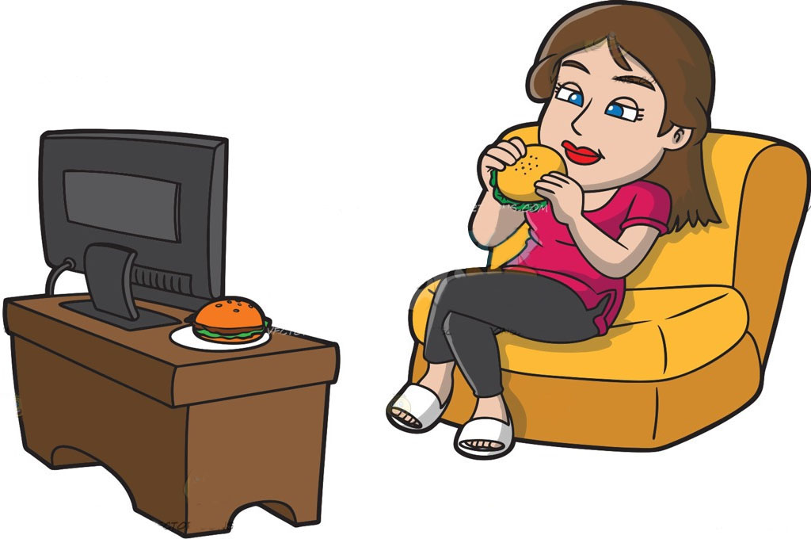
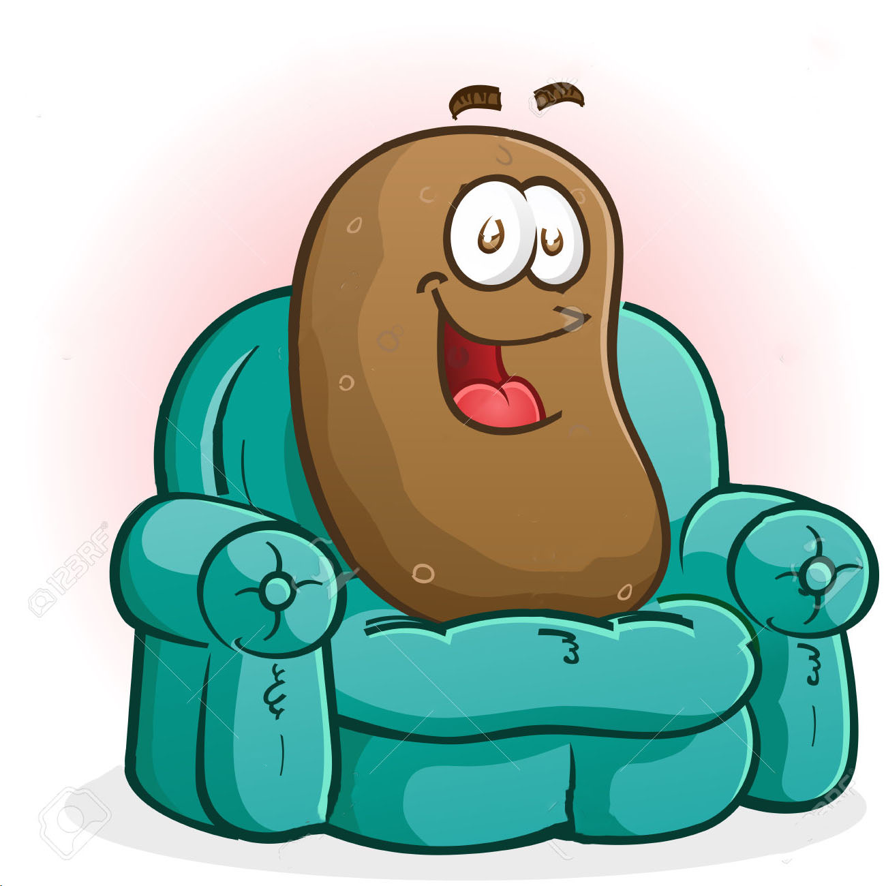
(You don't want to end up like this watching Netflix every night.)So many of us are secretly self-conscious and end up spending more time at home than we need to.Confidence in our appearance reflects our quality of relationships.
A successful diet is more than just food, it's about our quality of life.
Once you are clear on WHY this matters to you, nothing can stand in your way.
The more specific your goal is the better. If you could write it down and look at it every day, then that's even better. (If you're serious, stop now and take a moment to write down why this matters to you.)
Losing weight is the opportunity to finally give ourselves the attention we deserve, but might have neglected over the years.
Sometimes life might seem like it's all about everyone else. Our families depend on us after all.
I'm sure that you're a very nice person that is always giving to others.
But you have to be able to take care of yourself if you want to take care of your family. Now's not the time to put yourself "second" when it comes to your health. It's not selfish to prioritize your health. Instead, it sets the example for your kids.
How much longer can you realistically put this off for?
For some people, this guide might literally be here to save your life.
I know we are capable of accomplishing great things. You should believe this too if you don't already.
I believe each one of us is truly amazing, with infinite potential.
The beautiful part is that whatever happens to you affects everyone you know.
I want to see you achieve your dream weight and health because I know what it will mean for those around you as well.
There's nothing I want more than to hear from someone that I've helped tell me in their own words what their new life looks like upon reaching their ideal weight and what that means for them and their family.
I grew up with very bad asthma and hay fever, so I know first hand.
I used to eat fast food and drink soda all the time until I got to high school.
It wasn't until I started to play sports that I began to eat healthy and study how to get the MOST out of what I ate.
However, I was still sick with asthma and hay fever throughout college, even though I ate "healthy."
Finally, after college I learned about "non-hybrid" food (we'll discuss this later in the guide) and since then I've never breathed as well as I do now. I also stopped getting sick and coughing like I used to in the winter, which was a MIRACLE for me. (I live in New Jersey, where it goes from HOT summers to COLD winters).
In today's world, we can't afford to waste time sifting through a million sites, so I've done all of that work for you.
This guide represents my greatest work so far.
This is the definitive guide to help you cross the finish line of the health journey you've begun. It's here to help you put on the finishing touches to your existing routine.
You won't be able to find this information gathered all in one location anywhere else.
It has taken me YEARS of research and testing before I knew this was ready to share with you.
I know you will see an even greater change in your health and weight than you've seen before if you are willing to try the following at home.
Even if you've been following the LCHF diet perfectly for years without cheating and still haven't been able to lose that last bit of weight, this guide can help you like it has for my friend Ace.
In fact, I made this guide specifically for you since so many people are confused why the weight might have come off easily in the beginning, but now they are stuck. (chapter 1)
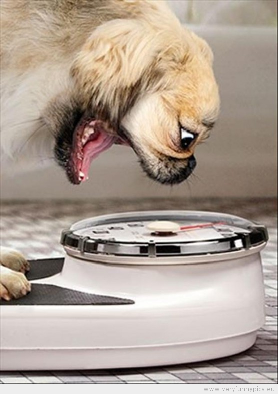
(You don't have to make "the face" anymore at your scale)Very few people know how to beat this temporary stall. (chapter 3)
And if you've fallen off the wagon in the past, this can also help you. (chapter 4)
Of course there's no one way that works for everyone. In fact you'll see how most people fall into one of two very distinct categories in chapter 3.
I'm just providing the tools for you to adopt. So you can make your own way.
This guide is NOT for you if you are perfectly happy with your LCHF diet. If you don't feel like things could get better, then there's no point in reading any further. I much rather say this now than to waste any of your time.
Also, if you're just looking to become "more informed" then you can go here instead.
This guide is only here for those of us who are ready to take action.
I want this guide to be the LAST guide you will need to read.
Why do something if you're not ready to give it your all? That's what I believe.
Are you ready to change?
Each chapter will build upon the last, so it's important to read this in order.
The links below will make it easy for you to come back at any time and pick up where you leave off.
P.S. Want even more support? Watch this special presentation I put together for you that shares the best wild herbs to help you satisfy cravings the right way and burn fat instead of lose water weight! Just click the button below:
1. What is the LCHF diet and how does it work?
a. Which foods can you eat (and which are off limits)
b. 4 types of people that can benefit from an LCHF diet (and 4 that can't)
c. How to successfully use the LCHF diet for weight loss.
2. 3 Ways to see if your diet is working (even if the scale doesn't move)
3. Common mistakes when using the LCHF diet (and how to avoid them)
4. What to do if you fall off track with the LCHF diet
5. 3 Health issues that you can fix with the LCHF diet
6. Frequently asked questions about the LCHF diet
a. "How 'low-carb' should I go?"
b. "Are there any downsides to missing out on 'good carbs'?"
c. "How do I explain the diet to my friends, family and doctor?"
d. "How can I eat out at restaurants and still stick with my diet?"
Remember, this is not your typical "eat less, burn more" guide. If that simple mantra worked we wouldn't be looking for something more.
Even though I could easily charge for what I'm about to share with you, I know it can help a lot of people and so I just ask for your help with sharing this page by clicking on one of the links below.
Before you dive into this guide, I want to stress that society will tell us to do what is comfortable. To only do what feels good and comes easy. Then we have to deal with the consequences down the road.
I don't want you to fall into this trap, even if you have in the past. I want you to read this guide and take action right away.
I believe it's human nature to want to improve and always do better. But sometimes society's comforts distract us.
The best way to get the most from this guide is to start out as small as possible. Small steps become HUGE wins. Highly successful people find ways to avoid taking on too much all at once.
It's extremely important for us to value and celebrate each small win. But I also won't tell you less than what is required.
The key is to not get overwhelmed by changing too much, too soon. Food, after all, is rightfully a part of our identities. It's the glue that got our family to sit down together, spark conversation, and now gives us something to look forward to when we come home from a LONG tiresome day at work.
For that reason, I recommend trying one thing at a time and waiting to move on until it has become familiar. Then when you're ready, return back to this guide and try out the next tip. I'm going to walk you through the entire process.
Again, it's a big mistake to read this and not apply any of the tips, or just one of them.
Weight loss and getting healthy is a journey, not a destination. Becoming overwhelmed is the biggest obstacle to reaching any goal, so that's not what we're going to do here.
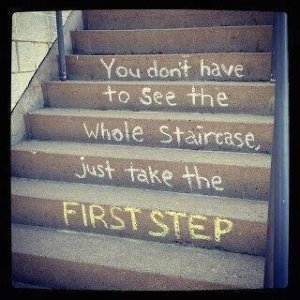
(How awesome?)I'm going to not only show you what works, but also how to make sure each tip easily becomes a part of your new daily ritual without having to rely on discipline. Scott Adams put it best when he said:
"Losers have goals. Winners have systems."
In other words, information alone doesn't have the power to change behavior. Willpower always reaches its limit and runs out. But you can develop any habit you want as long as you consciously plan ahead of time the right way so you're not making any in-the-moment decisions. It's a concept called "automating your success" and I'll show you what I mean specifically in a bit.
We're going to be combining the best of psychology and nutrition in a way never seen before to call forth the best version of YOU.
This guide is here to help you apply a strategy that supports your lifestyle. It's not a two week cleanse or a ton of random "super" foods that's going to get you to your goal and keep you there.
Now, just keep an open mind going forward because I WILL be sharing something very unique and special.
This is different from your normal LCHF diet. This will work MUCH better and be very simple to understand.
Chapter 1: What is the LCHF diet and how does it work?
a. Which foods can you eat (and which are off limits)
b. 4 types of people that can benefit from an LCHF diet (and 4 that can't)
c. How to successfully use the LCHF diet for weight loss.
We need a proper definition of unhealthy Carbs and healthy Fats to know what to eat.
But first, allow me to pose a question.
Do animals in the wild have doctors? In other words, do they ever get sick?
NO!
The only time they get sick is when they're in captivity. When humans feed them.
This means WE should never get sick! I know because I went from getting sick every winter, especially when people sneezed around me, to not getting sick for the past 2 years. (so much for my sick days off)
We don't want to listen to advice from self-proclaimed gurus that still get sick themselves. That's what I've learned.
Also, if someone doesn't mention the keywords "hybrid" and "mucous" (which we'll soon discuss) then don't waste your time.
Now, step one is to know what's making us sick and overweight.
Of course it's carbs, right?
But what exactly are carbs?
Let's discuss the elephant in the room. Marketers have high-jacked the phase "low-carb" to mean whatever suits them. Because of that there's debate about what should actually fall into this category, especially when technically ALL food contains varying amounts of carbohydrates (i.e. simple or complex sugars and also fiber).
Of course the body NEEDS sugar (i.e. glucose from quality sources, unprocessed from nature), but that amount is different for everyone. As Paracelsus put it, "The dose makes the poison."
Our other concern is putting something (unnatural) into our bodies that we can't break down, absorb, or use, which then negatively impacts our weight and health.
Therefore, the best definition of "bad carbs" is anything that is INDIGESTIBLE.
This includes: hybrid starches (complex sugars), hybrid fruits (simple sugars - fructose), insoluble fiber, processed sugar (sucrose), processed oil, dairy from cows (lactose), and meat from farm animals.
(Don't worry if you're a meat lover, we'll be covering "healthy" meats later on for certain folks that can digest it in varying amounts).
At best, bad carbs will get expelled right away when eaten in low amounts.
At worst, you become constipated and these carbs get stored as fat, which eventually causes health problems.
Do not make the mistake of thinking that there's anything nutritious or beneficial about these carbs since they can't be absorbed by our bodies.
If someone is sick, you wouldn't offer them a bowl of starchy white rice right?
That would just slow down the body as it's trying to expel what's causing us to be sick in the first place.
The less bad carbs, the better. Even though it is perfectly fine to "cheat" with them as long as you have earned them.
Yes, you can earn them.
Bear with me as we "geek out" for a moment.
Chemically speaking, carbohydrates are a combination of carbon, hydrogen, and oxygen atoms.
Your blood's potential of hydrogen (pH) goes down the more you eat bad carbs. Making it one unhealthy chemical bond.
Below a 7.35 means your blood is in a state of acidosis and disease may develop.
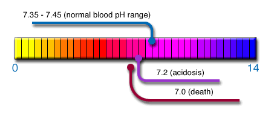
(Acid to the left and Alkaline to the right in the above scale)The interesting thing is that each type of bad carb is also known as an acid:
• hybrid starch (uric acid)
• hybrid fruit (malic acid)
• insoluble fiber (phytic acid)
• processed sugar (aldonic acid)
• processed oil (trans fatty acids)
• dairy from cows (lactic acid)
• meat from farm animals (carbonic acid)
Too much acid will literally "eat" through cell walls (made of fat), which otherwise protects our vital organs from "dirty" mucous, and in time this causes serious health problems (like inflammation) to arise.
Mucous is a great thing as long as it's kept outside of our cells, since it is our defense against harmful toxins in the body. Mucous acts as a trap for anything that needs to be expelled from the body.
But our bodies are so smart that they actually harden this mucous if you continue to eat unhealthy. Now the mucous acts as if it was plastic Saran wrap in order to partially block absorption.
This is known as mucoid plaque, which coats our small intestine (where 90% of food is absorbed) if we have eaten junk for years.
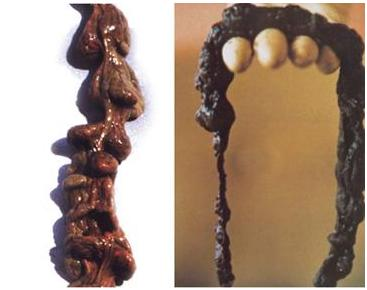
(This mucoid plaque actually came out of a person after they took a strong detox)That’s why if you've been eating healthy for a while and all of a sudden decided to cheat, you feel sick. MUCH more sick than you ever felt before when you used to eat the same junk food all the time.
That’s because your body wasn’t fully absorbing it!
I know because I used to eat honey buns all the time when I was a freshman in High School from the nearby corner store. Now just a few bites will make me feel like I'm dying. The same goes with soda, I can't touch the stuff.
The trouble with this is that our bodies can't know when you're going to eat something healthy. So if you're not consistent, you can eat well and not get it fully into your system. It's like having our pipes clogged.
Now thanks to these acids we also have trouble absorbing the only thing that can raise our blood's pH to be maintained within a healthy range (≈ 7.35 - 7.45).
Again, there's only one thing that can raise the blood's pH and keep it in equilibrium...
Minerals!
Minerals allow for a high pH, while bad carbs (excess sugar) a low pH.
If we eat food and drink water that is deficient in minerals, then we will lower our blood's pH over time.
Notice how I didn't say vitamins, antioxidants, enzymes, or even protein will raise our blood's pH.
It's because minerals are the elements on the periodic table. The simplest components from which everything in our physical universe is created. The true building blocks of life.
Minerals cannot be destroyed by exposure to heat, air or light, unlike vitamins. In fact, if you burned a plant to an ash then it would still contain the same minerals that were in the living plant. In fact, this ash (charcoal) can be used to absorb toxins in the stomach like intestinal gas (useful to prevent bloating), alcohol poisoning (useful to prevent hangovers), mold, etc..
(Side note: This is why I don't mind cooking my food, unless I'm cooking in water and then I dump out the water.)
There are 16 minerals (elements) that the body needs as a minimum.
Seven that are major: calcium, phosphorus, potassium, sodium, chloride, magnesium, and sulfur.
And nine that are trace: iron, iodine, zinc, chromium, selenium, fluoride, molybdenum, copper, and manganese.
However, this is not enough to thrive.
Out of 118, there are a total of 90 naturally occurring minerals (elements) that our bodies use to grow and maintain health.
 (These 90 minerals are highlighted in green)
(These 90 minerals are highlighted in green)Each identified and made unique by its electrical charge, meaning the count of how many electrons per atom.
Because these minerals are electrical (think "electrolytes" and all of those Gatorade commercials you've seen) and our bodies are electrical, there is a chemical affinity that exists between us. Meaning we can quickly assimilate / absorb minerals unlike anything else.
The catch is that they have to be in a liquid state, pre-digested by plants from the soil (ideally mineral-rich soil) for our bodies to absorb them.
For example, iron in it's hard form is known as iron oxide (or "reduced iron" on ingredient lists), which cannot be absorbed.
(Yes, some chips are even magnetic! I think I'll pass on the next bag.)
Iron fluorine, however, is in a liquid form and can be absorbed.
Sorry, solid iron shavings placed in some water or drinking out of copper pots won't help you at all.
Eating natural food is the only way to get these minerals.
In moderation, sea salt (preferably Celtic sea salt) improves the electricity in the body. However, "table salt" on average contains 1/3 glass, 1/3 sand, and 1/3 salt, which scratches the arteries causing them to bleed according to Dr. Leonard Coldwell.
Also, once someone tries to isolate a single mineral or compound from a plant, making it "proprietary," then it no longer assimilates the same way in our bodies.
A plant's electrical signature is maintained by it's unique composition of minerals. That's why eating "whole" is so important.
For example, the "flavor enhancer" MSG (Monosodium glutamate) commonly found in Campbell's Chicken Noodle Soup, which appears to cause cancer in some people, is an isolated component from one of the healthiest plants available, Kombu, which is a seaweed. (ref.)
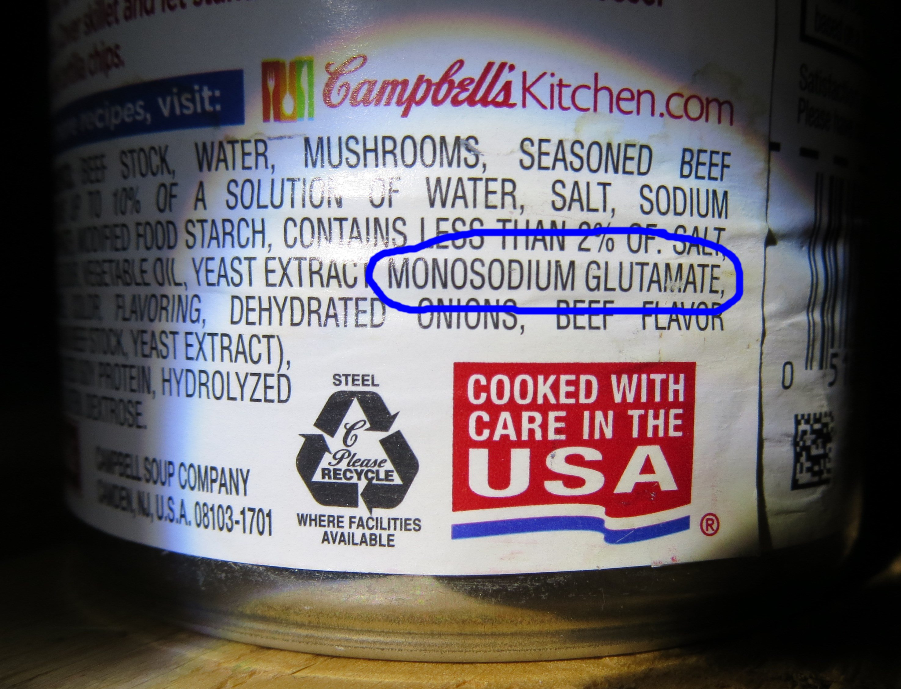
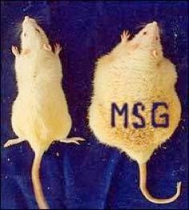
(The Glutamate Association lobbying group explains that the reason they add MSG to food is to "make people eat more.")
Also, the most popular vitamin in the world, isolated ascorbic acid or should I say Vitamin C, was proven since it was first discovered to be less effective than the whole lemon and orange that it was found in to cure scurvy. (ref.)
Yet it is still advertised nearly 90 years later as the best thing for us.
Study after study has also shown that taking multivitamins sparsely improves health. In fact, several studies have shown that excessively taking vitamin pills may actually increase the risk of certain diseases, including cancer. (ref.)
This is all very disturbing to say the least.
And while we know to avoid packaged, "fake-box" food and scary "GMO" food, it's interesting that no one points a finger at man-made hybrid food.
Similar to GMO food, hybrid food is the product of taking two different plants and producing offspring that is larger in size and with a better yield, despite sacrificing nutrition. Often these plants will have a weak immune system making them more susceptible to insect attacks, hence the rise in pesticide usage.
 (This process of hybridization is known as plant grafting. Minerals from the soil can't travel the same way past the new joint, which produces infertile seeds or sometimes "seedless" fruit. These wouldn't survive without human intervention and is different from naturally occurring hybrid food via cross-pollination, which maintains its fertility.)
(This process of hybridization is known as plant grafting. Minerals from the soil can't travel the same way past the new joint, which produces infertile seeds or sometimes "seedless" fruit. These wouldn't survive without human intervention and is different from naturally occurring hybrid food via cross-pollination, which maintains its fertility.)GMO just means the process is controlled... scientists know exactly has many genes from one species will travel into another species.
With man-made hybridization it's random and uncontrolled.
And guess what?
The "High Molecular Weight" (HMW) proteins, which causes dough made from wheat to have great elasticity, is what makes wheat hard for a lot of people to digest, makes us tired, and only exists in... you guessed it... hybrid food!
This is the difference between a bad carb (starch in this case) and a good one.
White rice vs. wild rice, wheat vs. einkorn, Irish potatoes vs. purple potatoes, corn vs. teosinte. All of these are examples of unhealthy modern starches vs. their healthy ancient counterparts.
One study conducted in 1999 on mice confirmed that when fed modern wheat they would develop diabetes, but didn't when fed the ancestors of wheat. (ref.)
So now let's cut to the chase.
What are some truly natural / original / "ancient" foods that will feed our mind, body, and soul?
(click the image above to view a printable chart that you may use the next time you're shopping - you can click on the boxes to place a check in them - also notice how many "vegetables" are actually fruits. Many of us think we're eating enough vegetables, when we're not.)
Action Step: Right now, without overthinking it, I want you to mark just one item from this list to try out this week before you continue reading. (Click here to purchase online if available. Just type the name of that food into the search bar.)
Some of the food above is exotic / tropical fruit that can be hard to come by in the United States. But with the internet (and local ethnic grocery stores), you can find almost anything... including all of what is listed above.
Turns out, thinking a little less about what we're not supposed to eat and making an effort to grocery shop instead works better to stay on track.
In chapter 4 we'll talk about some of the most nutritious (mineral-dense) foods that are on this list and how to prepare non-boring meals for the week with them.
For now, you might have noticed that there's quite a few grains on this list.
Shocking!
That's right, as was alluded to above, it can be healthy to eat pasta, bread, etc. IF it is made from one of the above "ancient" grains. As you may notice, these are not the common "ancient grains" that you see advertised in most stores. These are different and mostly unheard of in America.
It's a good practice to never assume that marketing hype is correct.
Still, with the correct ancient grains it is true that a person with gluten sensitivity, meaning they can't eat wheat, may find it ok to eat a grain like Einkorn. Celiac disease is a different story though, and these people wouldn't be able to eat any grain.
(Notice how I'm not even putting wheat grass on the above list, since it's grown from the inferior wheat seed. All "grains" are really just the seeds of different grasses.)
(Fun fact: if you don't cut your grass for long enough then "flowers" (minus the showy petals and sepals) will form at the ends of the stalks where the seeds / grains grow.)
In fact, most food allergies come from food that is hybrid. It's really sad because many people live with allergic reactions to a certain food and yet never realize the cause.
Said another way, man-made (as opposed to naturally occurring) hybrid food is incomplete, so not everyone can assimilate it properly. This has varying effects for different people.
Of course, I don't expect anyone to only eat from this list.
Again, the occasional cheat meal is perfectly acceptable provided you're not extremely ill.
You just have to define the word "occasional" for your situation, since you should know your body better than anyone else. Listening to how your body responds after you eat a certain food is crucial in this journey. That's why a food journal is recommended, because it's too easy to forget or not pay attention.
Your goal is to figure out whether you're "sensitive" to hybrid starches, hybrid fruits, or meat from farm animals.
These three groups affect people differently.
Action Step: Start with one category of food to remove from your diet and then work your way to another. It takes at least a month to make something into a habit. So give it at least a month before phasing some of that food back in. See how you feel before and after and write it down if it helps you remember.
Also, it's important to not just focus on minerals, but also bacteria (vitamin B-12) and fungus. These three kingdoms share a very special synergy. If you're a good gardener, then you know all three are required to feed your soil in order to produce the healthiest plants. The same principals apply to the human body.
If you want to increase absorption of healthy food, then you need all three in your diet. In fact, the best "digestive enzyme supplements" are derived from fungus. (Although, it's best to skip any supplement and just go to the source.)
Fungus encompass all the mushrooms mentioned in the above list and many more (except Shitake mushrooms, which only reaches a couple inches down into the soil). My three favorite mushrooms are Oyster, Lion's Mane, and Djon Djon.
Bacteria is found on the skin of freshly picked food from a garden and is enhanced when you ferment it in water for around a month. Think sauerkraut, kimchi, kombucha, nutritional yeast, and even coconut vinegar.
This way of eating (w.o.e.) would benefit any person regardless of being a man, woman, young, old, pregnant, body builder, sick, healthy, etc.
It's because the focus is on eating the most mineral dense, unmodified foods.
There are however four main types of people that seek this lifestyle for its benefits.
- Overweight
- Diabetic with potential heart problems
- Family history of cancer
- Arthritic
Regardless of which group you're in, we need to all do the same thing.
It's a two-step process:
Step #1 Clean the body
Step #2 Feed the body (more of this in Chapter 5).
It's really that simple.
There's only three ways to periodically cleanse the body.
There are of course times when people wouldn't benefit from a cleanse however.
- Under 16 (you need to grow your body)
- Pregnant (you need to grow your baby)
- Stressful environment (you want to be in control during this period)
- Taking certain medicine (remember you'll be absorbing more of it the cleaner your small intestine becomes, and you don't require the same dosage if your body is becoming healthier)
For everyone else it's preferred to do something to regularly detox / cleanse your body to get rid of any toxins / build-ups like preservatives, air pollution, internal stress, junk food, bad carbs, etc.
This is the "SHOCK" to your system that you need.
And it will work even if you've been stuck for years.
As mentioned above, we have ONE common enemy: bad carbs (i.e. unnatural hybrid, gmo, or processed food). Which causes holes in our mucous membrane (since it's acidic rather than mineral-rich and alkalizing), therefore producing stray mucous in areas (organs) it doesn't belong.
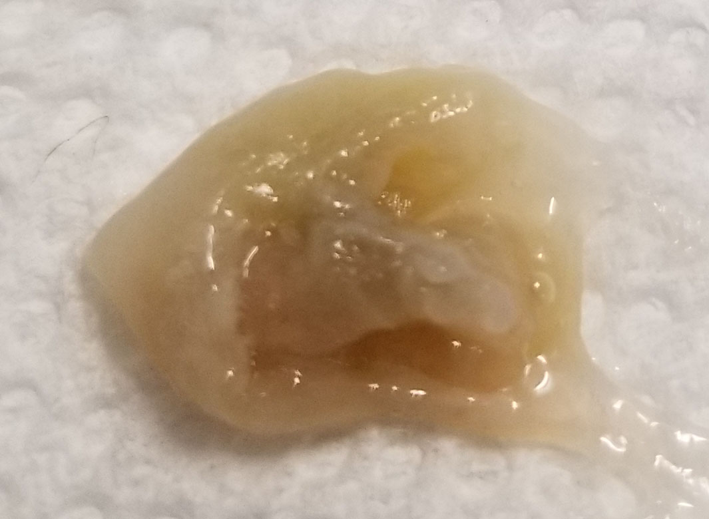
(This came out of me!)Yes, this is gross. But since you've read this far I'm sharing what I had to keep spitting up.
This bad boy was stuck behind my throat. Somewhere between my nasal passage and throat, which limited my breathing.
I wonder how much money was wasted on me for asthma medicine while growing up. You see, I often could only breath through one nostril and thought it was normal.
Let me tell you how much of an improvement I had after spitting this up! It was a HUGE difference.
This is what you want to eliminate as well.
Based on how unhealthy your eating has been, it will determine how much mucous will come out of you and how hard this process will be for you.
For Ace, this process wasn't too bad because he mostly ate healthy at this point.
This is what he had to say about it.
(click play above)
[Question]
Is there anything more important than counting calories, and even macros (fats, proteins, carbs), when it comes to losing weight and getting rid of inflammation (caused by stray mucous)?
YES... and that something is called insulin!
Most people don't understand how insulin plays a role in our body's ability to cause weight gain and illness, even if you don't have diabetes.
Dr. Jason Fung does however. He's treated thousands of patients in his clinic in Toronto and across the world by understanding the importance of insulin. (click here to watch several of his videos and here to visit his personal blog to see his amazing work)
You see, all hormones (like insulin) are simply messages from one part of the body to another.
Insulin is the message from the pancreas to other cells throughout the body. The pancreas measures how much sugar (carbs) is in the blood. Once enough sugar is in the blood, then the pancreas tells the body's cells to absorb this sugar so it can use it as fuel. Again, the body's cells NEED sugar (specifically glucose) as fuel. Without this insulin message, the body's cells won't absorb the sugar.
This makes sense, because in order for our blood to maintain a proper pH it needs to have a proper ratio of sugar to minerals... of acid to alkaline. (Too many minerals are considered toxic, the same way too much sugar is. This imbalance is avoided with non-hybrid, non-gmo, and non-processed food.)
If the body's cells become full of sugar, but there's still too much in the blood, then the insulin message will travel to the liver for it to absorb and store the sugar to be later released in times that the blood's sugar levels are too low.
So far, so good.
The trouble with being overweight is that the body's cells are full of sugar, the liver is full of sugar, and the blood still has too much sugar (carbs) in it. Now the excess sugar gets converted into fat by a process known as lipogenesis.
(Keep in mind once more, the quality of the sugar source makes a HUGE difference. Glucose from non-hybrid fruits does not react the same way as fructose from hybrid or gmo corn, etc. Fructose is more likely to be stored as fat than used as fuel.)
At this point, the body can no longer respond to the insulin message. This is what you call being "insulin-resistant," which all overweight people are to some degree. The sugar (carbs) have no where to go, so they begin to make us fat and sick. In the worst of cases, people with different sensitivity will develop type-2 diabetes, possibly without even getting visibly fat.
The only successful way of treating this, is by reducing or temporarily removing your intake of bad carbs (the wrong sugars and insoluble fiber) so your body has the time it needs to use the sugar you have already stored as fuel. It almost sounds too simple doesn't it?
Dr. Tim Noakes, located in South Africa, risked losing his license to practice because he promoted this way of eating to his patients. It was a year long case, but finally in April of 2017 he was found not guilty by a professional conduct committee. This was a huge victory for the low carb diet. To learn more, you can watch the interview he had with Dr. Joseph Mercola here.
There are six scenarios that trigger excess insulin to be produced, therefore causing the body to stop responding to it and allowing excess sugar to build up. (the missing four will be discussed in chapter 3).
- Eating too frequently (important for Intermittent Fasting)
- Avoiding Minerals (important for Liquid Fasting)
Intermittent Fasting
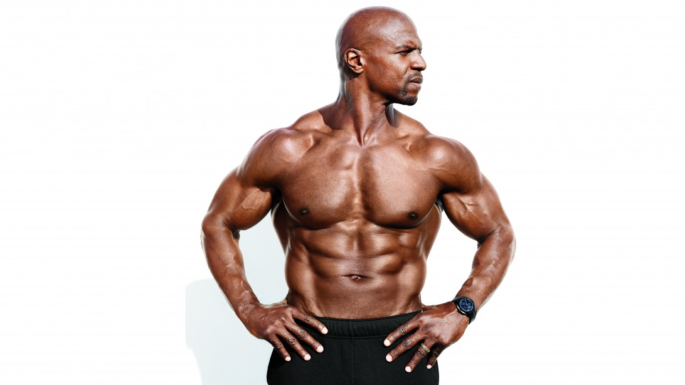
In truth, it's not just what you eat, but also when you eat.
Even healthy snacks throughout the day raises insulin, which leads to weight gain.
Remember, insoluble fiber is a type of carb.
Consuming liquids throughout the day like mineral-rich water, herbal tea, and even for some people home-made squeezed juice from non-hybrid fruits (which does contain soluble fiber that is needed to feed healthy gut bacteria to improve overall digestion) won't hinder your weight loss at all. (In chapter 4 we'll discuss some drink recipes.)
But as for solid food, it is best to consume within a 6-8 hour "feeding window." This allows our bodies 16-18 hours to digest within a 24-hour span. This "resting" time makes a HUGE difference.
Ideally, we will avoid eating after sunset or at least 4 hours before sleeping so our digestion doesn't disrupt our sleep. Meaning that if we go to bed at 11pm, then we should stop eating at 7pm.
Pro tip: Brush your teeth before bed so you're not digesting food stuck in your teeth overnight. Studies prove that gingivitis can be linked to heart disease if not treated in time. This is because we absorb food left behind in our mouth directly into our bloodstream as our saliva breaks it down.
If you don't enjoy flossing, then watch this video or invest in a water pik like I chose to.
Better yet, instead of taking those mint-flavored toothpicks from restaurants, just keep an "African Chew Stick" in your car. (this tip is great if your'e trying to kick a smoking habit!)
While intermittent fasting, most people choose to skip breakfast and instead prepare a drink to have (even if that drink is just water).
This won't hurt you as long as you have planned your lunch, so you don't force yourself to grab whatever happens to be available when it comes time to eat.
It's ideal to have one or two meals a day because it allows for more time to digest. Here is an example timeline of when it's best to eat.
16 hours fast (8 hours eating) 12pm-8pm (2 meals a day)
19 hours fast (5 hours eating) 2pm-7pm (1 meal a day)
Action Step: Test for a week. That should be more than long enough to notice a difference, which only gets better over time. Make this commitment to yourself.
This doesn't mean you have to eat less food if you want to lose weight.
Eating less frequently allows us to eat larger amounts of food each day, without gaining weight when compared to eating 3 or even 6 meals a day.
For example, take a look at how Blake eats while maintaining his weight loss.
It's a small world because I graduated college with this guy's girlfriend.
(Not that I recommend his food choices, but it's still impressive to note that he doesn't gain any weight and has been eating only one "monster meal" a day consistently since 2014!)
That's the power of allowing our bodies time to digest.
Another example would be what Cara eats in a day.
(Keep in mind that she's 48 as of 2017!)
Pro tip: If you're a women, after an intense workout you should eat something healthy and natural (preferably not a protein bar or shake). Especially if you experience irregular menstrual cycles or low libido. This is because when you workout testosterone increases, and when you fast testosterone increases. Excess testosterone in women occurs much sooner than in men, which causes such problems.
If you think about it, the body suffers when you eat non-stop much the same way your phone or laptop's battery suffers if you were to constantly charge it. After a while the battery's life begins to decrease and can no longer hold a decent amount of charge. Everything needs time to rest and recover in order to preserve it.
Also, three square meals a day didn't become the accepted norm because of some spectacular scientific studies.
No.
Instead, it's because when Columbus and his men first landed in America they noticed the Native Americans (who were here for thousands of years) ate when they felt hungry. They didn't follow the same schedule everyday, ate different amounts in different seasons, and even fasted when food was scarce. Since the native people were viewed as inferior, this practice had to be considered "uncivilized" and in an attempt to separate us from them, it was decided to institute "three square meals a day."
Because of this, it became more important to follow society than to listen to our bodies. What a mistake that was.
Also, rushing through a meal and not chewing properly is horrible for our digestion. Food needs to be turned into a mush before swallowing and the act of chewing even releases pre-digestive enzymes to further break down the food.
It's important to SLOW down when we eat so we can take the time to enjoy our meal and actually taste our food.
Eating around friends and family is also encouraged versus eating in front of our computers as tempting as it may be. Usually company will put us in a better mood, which helps our digestion. We should pay more attention to cultures outside of America, since the majority of them seem to have this down.
And if you do cheat, feeling guilty about it just serves to disrupt your digestion and make it worst. It's best to instead accept your cheat meal and move on without beating yourself up.
It's underestimated how our attitude plays a role in our digestion. For example, do you know why so many religions request you to pray before meals? Is there any scientific reasoning that might explain this?
Masaru Emoto, from Japan, was able to prove that our emotions (whether expressing gratitude or something negative) could physically change the molecular structure of water, which is visible under a microscope. Yes you read that right.
Symmetry would only occur with positive emotions, and asymmetry with negativity.
How does this translate to our health?
Another experiment was performed on rice. Three jars of rice in water were left out in room temperature over the course of a month. One received a daily message of gratitude ("Thank You"), another of hate ("You're an Idiot"), and the last one was completely ignored. The only rice that didn't grow mold was the one with the message of gratitude.
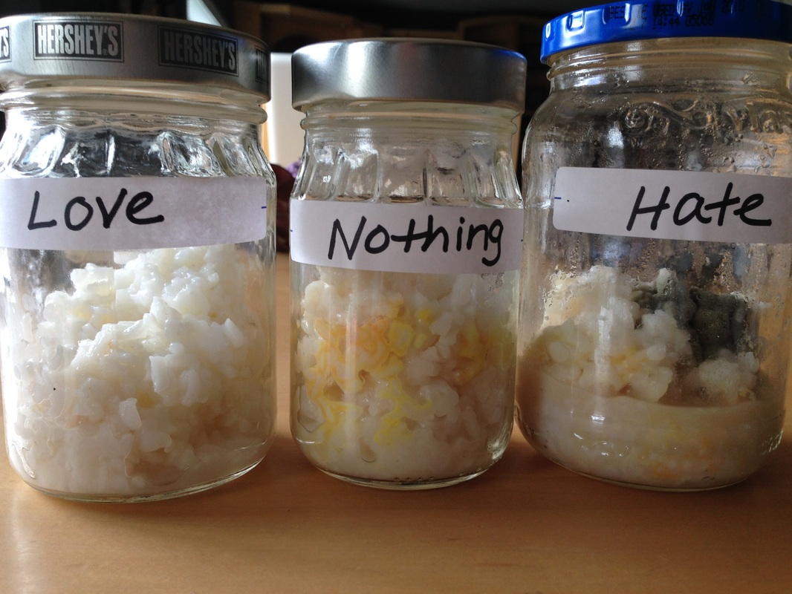
If you do a quick search on YouTube, you'll see that this experiment is repeated by a number of people. In other words, it doesn't matter the specific words, but just the feeling of gratitude does transcend what we are commonly taught in school.
Liquid Fasting
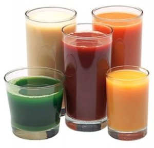
Mark Mattson, professor of Neuroscience at Johns Hopkins University, found that the brain generates new neurons when we fast. This means we become more resistant to the effects of Parkinson's and Alzheimer's Disease with fasting.
Not only that, but you can look younger and increase your life span with fasting. This has been proven in a number of studies like this one from Harvard University.
But did you know there is a secret to fasting so that it feels like you're cheating.
Trust me when I say, you DO NOT want to fast the hard way.
While it's great for discipline, it's also not necessary to see the same results.
Remember I used to wrestle, which means I used to cut A LOT of weight. So I know how extreme a fast can get. My senior year I cut down from 130 to 112 pounds, which gave me a body fat percentage of 5%. Of course, I wouldn't recommend that to anyone.
But now I know how hard a "complete fast" or "water fast" can be. This is also like what Jay did below.
(Notice how he mentions that any scars he had began to disappear! @13:28 - Also, note that having a tongue brush to clean the white mucous off the tongue daily is recommended.)
Another, more extreme, example is of Angus Barbieri from Scotland. At the age of 27 he weighed 456 pounds and went over a year (382 days) without eating, until he reached his goal weight of 180 pounds. During the fast he mostly stayed home and only drank sparkling water, tea, coffee and took vitamins while under close inspection from his doctors. Five years later, he kept almost all the weight he'd lost off, weighing in at 196 pounds.
This goes to show what the human body is capable of. But again, a "complete fast" or "water fast" isn't necessary to get the same results.
Like I've mentioned throughout this guide, you want to ONLY fast from bad carbs.
NOT minerals!
Starving ourselves of minerals drops our blood's pH, which causes our insulin to shoot up.
This gives us that dazed feeling caused by skipping meals and makes us fall into the cruel spiral of gaining back the weight we lose.
The "Eat Less, Move More" campaign promotes this idea.
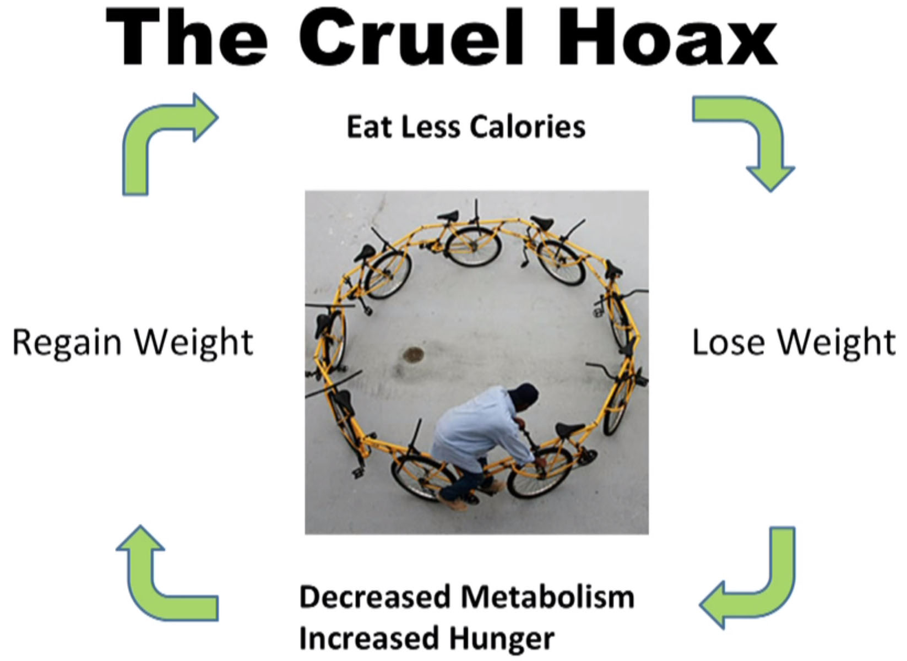
(This popular strategy causes NUTRIENT DEFICIENT people that remain overweight - image credited to Dr. Jason Fung)This advice is like telling an alcoholic to just drink less.
This method will never help us long term.
That's why it's so important to continue getting our daily minerals.
During a fast, that just means you drink them.
Just like in intermittent fasting, you can and should have all the mineral-rich water, herbal tea, and (for some people) non-hybrid fruit juice you want.
You know if you shouldn't have too much fruit juice based on your metabolic type and how it makes you feel. This differs from person to person, which will be discussed more in Chapter 3.
Also, don't buy into the fiber propaganda as the answer to stomp out constipation.
It's common to see people load up on eating beans, oats, brown rice, dried fruit, and even fiber capsules made from the shell of a grain called psyllium with hopes of cleaning out their body.
Yes, this may help you go to the bathroom... but you're mostly eliminating what you just ate!
In contrast to minerals, our bodies waste a lot of energy processing insoluble fiber when it could be removing old fat.
Insoluble fiber (pulp) is NOT digestible / broken down by the body. It remains close to its original form as it passes through our digestive system.
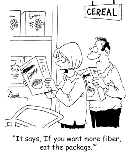
It is then pointless for our health, since we're not absorbing anything from it!
It only serves to psychologically make us feel fuller temporarily, when all we eat is mineral-depleted food. That's it!
Our bodies are like large juicing machines. We extract the liquid minerals from food and get rid of everything else.
If you have a poor digestive system then you will miss some of these minerals as they'll stay in the fiber, and you'll lose them when you go to the bathroom.
That's why when we're sick it's important to drink, since the minerals will be "pre-digested" / separated from the fiber. We're no longer relying on our stomachs to do the work.
When we fast we free up energy.
We need this energy to remove the stuff that has been stuck in our bodies for YEARS in some cases.
Our bodies can't do this if we're busy digesting breakfast.
This is also why most celebrities work out in the morning before breakfast, instead of in the evenings.
If you think about it, when we get sick our appetite naturally goes away so our body can have the energy to repair itself.
If you ever received a colonoscopy then you already know why the body would require a reserve of energy.
If you want to get rid of this stuff you're going to need a plan. You need to follow a fasting schedule.
Beginner's Fast = 2 Days
Intermediate Fast = 5 Days
Hard Fast = 21 Days
Extreme Fast = 90 Days
(2-5 days is recommended because that's how long it takes to burn through sugar currently in the body, before burning fat (stored sugar that's been converted) as fuel.)
(21 days is recommended because that's how long it takes to develop a habit (useful for future fasting) and see even more results if you have a lot of weight to lose.)
(90 days is typically recommended because this is the minimum time required to kill a parasite infection. It might not be until around 30 days to have the parasite come out. But when you kill an impregnated parasite she will drop eggs that will not hatch for one to three months, and you cannot penetrate those eggs. This time-frame ensures all hatched eggs are destroyed.)
Pro tip: Don't worry, our bodies are smart. When we fast, anything that is unnecessary will be used as fuel first. Sugar, fat, extra skin - these are the things that will be targeted first. Not muscle like most people believe. As Dr. Jason Fung says, it would be like storing wood for the fireplace (i.e. fat for energy), but then you chop up your sofa when it comes time to start the fire. It wouldn't make any sense.
Also, keep in mind that your taste buds will completely reset after a fast. Food will never taste as good, like Jason discovered when he broke his fast after 28 days.
An even more in depth description of what it's like to be on a water fast is explained by Steve Pavlina (the same person who inspired me to create a website in the first place after graduating college in 2012).
(Any less than great experience, like lack of energy, that he describes and appearing skinnier than most would want is remedied by what I'm about to share in the next section. At the 19:05 mark he answers how he planned ahead so he wouldn't succumb to hunger during the hardest first few days. At the 31:51 mark he describes how he's going to break his fast.)
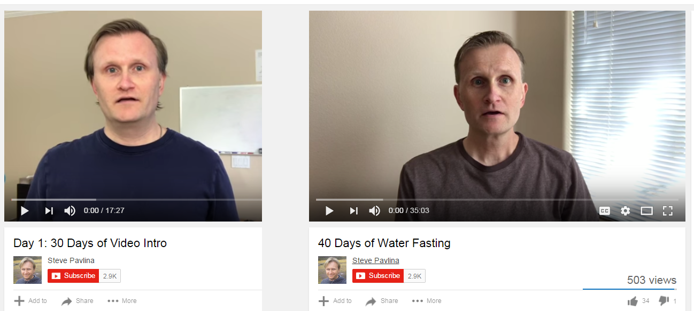
(Before and after of Steve Pavlina's 40 day water fast)Cleansing Herbs
There are two ways you can overcome hunger.
Either you can graze until you fill your gut with a bunch of random fiber (which wouldn't count as a fast and you'll actually become hungry again soon after).
Or you can consume small amounts of high-mineral-dense food and surprisingly get the same "full" feeling.
I'm talking about dehydrated vegetables (herbs) used to make herbal tea, herbal capsules, herbal infusions, herbal tinctures, or herbal spagyrics.
These vegetables (herbs) are far more nutritious for us than almost anything else.
In truth, we get hungry because we are nutrient (mineral) deficient, and not for any other reason. Not because we are calorie deficient and not because we need to fill the volume of our stomach.
This is the secret to make fasting feel like you're cheating.
Here's a list of the best herbs to feed you on the left and to clean out your body on the right.

(click the image above to view a printable chart that you may use the next time you're shopping - you can click on the boxes to place a check in them - you can find and order all of these online, where they are sourced from their natural, tropical environments and grown in healthy, mineral-rich soil. The quality of soil is what makes such a difference with these herbs vs. the food in a grocery store.)
One of the most powerful herbs to help you go to the bathroom is Quassia (Bitter) Bark.
Tree bark in general (along with roots) happens to be some of the healthiest food we can consume, believe it or not. One reason is because it doesn't go bad like leaves and fruits do, because of its lower water content.
(Side note: Don't be afraid to eat tree bark. If you've ever had cinnamon, then you've had tree bark already.)
As with all of the above herbs, just a little goes a long way. But don't take less than what you need. I see too many people that don't take enough, and never get to realize the real power of these herbs.
When it comes to "daily herbs," you should imagine your body as an empty gas tank. We're so depleted of minerals because farmers only put 3 minerals back into the soil (at most 16). Yet, there's 90 different minerals our bodies need that plants can't produce on their own. This is why we have to first full our gas tank with the "daily herbs." Then, whatever we consume on top of that is what will give us the full experience of these herbs.
I've been taking all of the above herbs for over 3 years now. The first year was dedicated to taking them individually as (vegetable glycerin) tinctures, so I could know how each one benefited me. This is when I was finally able to get over my pernicious winter cough and improve my breathing beyond what asthma medication had ever offered me. (I used to take three different medications, and grew up on the nebulizer.) I attribute my improved breathing mostly to mullein leaf. I can't recommend it enough for someone with asthma. (Side note: I found alcohol-based tinctures to be unpleasant as they burned my throat.)
Then the next year was spent taking only capsules that I would make. That's when I began mixing them together and found out what paired well.
The following year was a combination of both capsules and tinctures. Throughout that whole time I would always take large amounts to see what my limit was. But in fact, the more I took the better I felt. I never felt like I was taking too much, but that's just me.
Be sure to listen to your body, since it's the only thing that can tell you how much you need.
You can consume a little at first, but again realize it won't work if you don't take enough. The above herbs should be treated as vegetables, since that's what they are.
They're not the same as concentrated pharmaceutical drugs that have specific doses. Especially if they're not a "cleansing herb." At the end of the day, they're vegetables and we're suppose to eat more vegetables than any other food group. In fact, it's the only food group that every diet can agree on!
Since half the "vegetables" that we think we're eating are actually fruits (anything that contains a seed is a fruit, like tomatoes, cucumbers, peppers, squash, etc.) we need to expand our vocabulary to fit in these herbs that were never taught to us.
Now, when it comes to Quassia (Bitter) Bark, you will want to take it as a capsule to avoid the taste. Like the name applies, it's extremely BITTER.
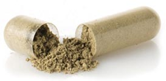
(Food that's bitter is the BEST for digestion and cleaning out the colon.)Dandelion root and leaf can be prepared as a tea, since the taste isn't as bitter.
In chapter 4 I'll share my Slim Tea Recipe.
It should also be mentioned that tea is child's play when compared to an herbal infusion.
The difference between the two is whether you allow the herb to steep in water for 12 minutes or 12 hours.
The longer you allow the herb to steep, the more the water is able to absorb.
You can take these "cleansing herbs" while you liquid fast or while you intermittent fast if you want an added boost.
Or you may choose to take these "cleansing herbs" without fasting.
It's entirely up to you since all of these methods WILL work. What you should do just depends on your situation.
Also, consider the fact that a 90 day supply of a generic (cheap) version of Lipitor (a statin used to control cholesterol) costs $380 ($126.67 per month). These herbs don't cost anywhere near that price and work better.
The "daily herbs" featured above will keep you from getting hungry, tired, and even anxious whether you're fasting or not (provided you're eating healthy).
Of course if I'm fasting then I'll take more, so I'm less hungry. This doesn't negatively impact the results from a fast, and instead boosts the results.
These herbs are best taken on an empty stomach as if they were their own separate meal, and one hour before most medicine (more on that in chapter 3).
There is one fruit that deserves a special recommendation here.
It's the oldest pepper still around today, known as the Tepin Pepper.
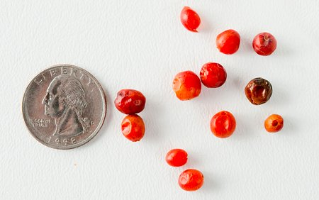
I sprinkle this on just about all my food and I'm rewarded with my sinuses being cleared right up. This can also assist some people with going to the bathroom and improves circulation. But be warned it's extremely spicy like a habanero.
Luckily, the spicy sensation doesn't linger around like a habanero and instead goes away fast. Mind you, I used to HATE spicy food but I've grown to LOVE this little pepper.
Chapter 2: 3 Ways to see if your diet is working (even if the scale doesn't move)
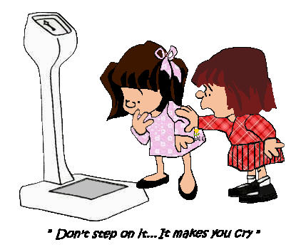
You're not allowed to step on the scale as a part of this diet for three months.
Why?
Because we don't want to psyche ourselves out or become obsessed with numbers.
This just adds stress onto us, which increases insulin and makes this journey that much harder.
It's like trying to watch a pot of water boil.
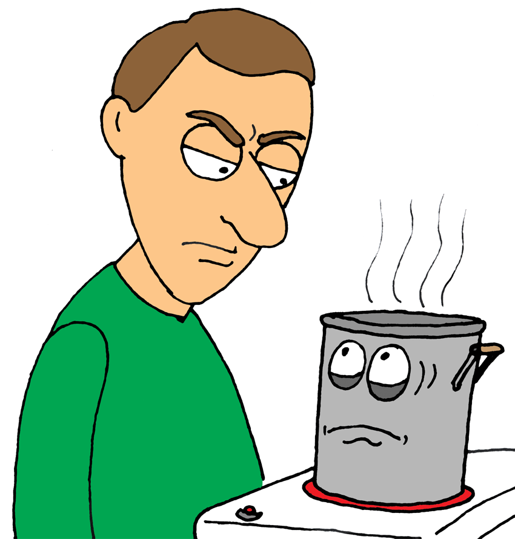
(poor pot)You know it's going to, but because you're starring at it now it feels like it's taking so much longer.
It's the same concept with constantly weighing yourself.
Rest assured that eating this way is going to make unwanted weight come off.
Period.
To know you're on the right track, you're going to look for qualitative signs instead of quantitative ones.
That means you're going to compare the quality before and after of your:
Quality of Bathroom Trips
Let's not beat around the bush.
What does the perfect poop look like?!
What's the consistency, frequency, and how should it feel when we have a movement?
Luckily a chart exists that categorizes our bowel movements on a scale from 1-7, where #4 on the chart is ideal.
YES, there's a chart for everything now-a-days.
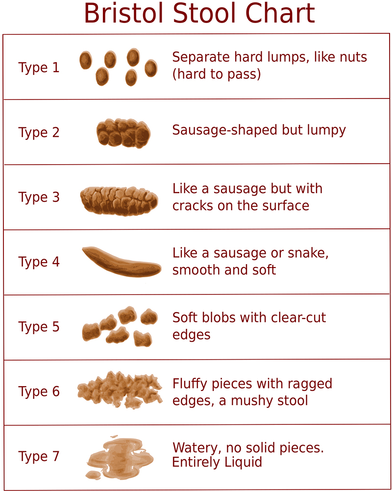
(Stop now and answer - Where are you on this chart?)Typically, after almost every large meal we should have a movement that passes easily with no force, minimal wiping required and that doesn't smell like death!
That last part is key!
If you're not already around a #4 on this chart, then this will be the first thing you will begin to notice improve.
Knowing where you are now will help guide what you need to focus on.
If you're at either end of this chart, then that means you're temporarily constipated (especially if it's been a few days since going) or have diarrhea. To fix both issues you need to re-hydrate your body and take any combination of herbs from the above list.
Being constipated means that we have been dehydrated for a while.
Having diarrhea means that we are now dehydrated.
Also, it has to be said.
Even though people swear by it, stop drinking Pepto-Bismol to stop diarrhea!
This drug is an antacid, which works by neutralizing stomach acidity so our digestion slows down.
While this is a quick fix to stop our bodies from producing diarrhea, it's also preventing the root cause from escaping as efficiently. It's the body's natural response to quickly get rid of whatever caused the upset stomach in the first place. You do not want to hold this in any longer than it needs to be.
Now our bodies just have to run their course of healing. It's like when we vomit and start to feel better after getting out whatever we needed to.
Pro tip: If you're constipated, then use a "squatty potty" for easier bowl movements.
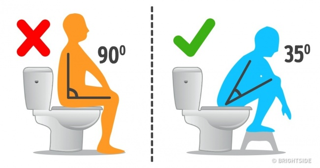
If you have diarrhea, then drink some mineral-rich herbal tea, which is naturally alkalizing.
Quality of Energy
You should feel amazing!
Even if you're fasting, your energy should be higher than ever.
This is what Ace had to say about his energy during his fast.
(press play)
Quality of Skin, Hair, and Nails
Show me a person's face and I can tell you how their health is.
By looking at someone's skin you can too.
Do they have brown circles under their eyes, oily skin, pimples?
Ace reported that his skin cleared up once he started his fast.
He used to have growths on his skin that just vanished over night. Here's what he had to say about it.
(press play)
Pro tip: Activated charcoal will clean your pores and make you look younger.
Jojoba, Argon, Marula, Tamanu oils will treat dry skin and hair.
Whatever you put on your skin, your body will absorb into the bloodstream. So if you can't eat it, you technically shouldn't put it on. Of course being poisoned through your skin is much less likely than through ingestion, but your immune system will eventually notice the difference.
We also breath through our skin. This is why we have the best ideas in the shower. That's when our skin may breath the most, unhindered by tight clothing.
Your hair should not be oily, breaking, or falling out. Proper nutrition can begin to reverse this.
Oh, and gray hair is not a sign of old age. It's instead a sign of stress coupled with a copper deficiency.
Pro tip: Kallawa has the highest amount of copper. And mushrooms, like the Portabella, are also high in copper and make a great substitute for meat if you're vegetarian.
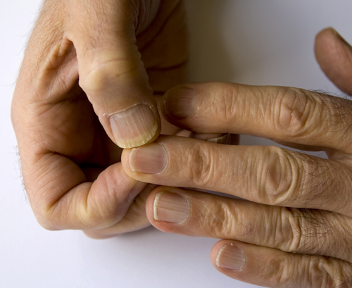
Brittle or discolored nails are also a sign of poor health. A silicon deficiency to be precise.
Pro tip: Irish sea moss is great for this since it's high in silicon.
Measuring vs. Weighing
Ok. I get it.
With all this being said, you STILL want to measure something tangible to track your progress.
So, here's why I recommend measuring inches, instead of weighing pounds.
Measuring weight, or even tracking BMI, doesn't allow you to target areas of the body. This is crucial for determining our potential for disease.
Also, up to 60% of the human adult body is water, which constantly fluctuates.
To be sure you're losing fat, the best tool we have is not a "body fat" scale, but a simple tape measure that a tailor would use.
To understand your body fat content, you want to calculate your waist-to-hip ratio. Divide your waist measurement (measured at the navel) by your hip measurement.
For men, the ratio should be no higher than 0.90%.
For women, the ratio should be no higher than 0.83%.
In other words, we're trying to find out if we're a pear shape or an apple shape!
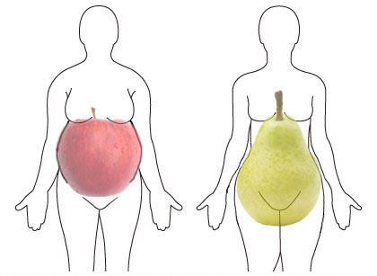
(Which one are you?)Apple shape = Visceral Fat, which stores underneath our abdominal muscles and puts pressure on our organs and blood vessels.
Pear shape = Subcutaneous fat, which stores directly underneath our skin (above muscle), can be pinched and doesn't pose the same threat.
So, it's better for our health to be a pear shape!
Sadly, we don't have control over which one we are. Some people store fat in their waist while others in their hips and limbs. Just 10 extra pounds stored in the waist can change our blood pressure, unlike 10 pounds stored in our hips and limbs.
Yes, this means a person that looks overweight might actually be healthier than a person that looks skinny and weighs less, but has a protruding stomach.
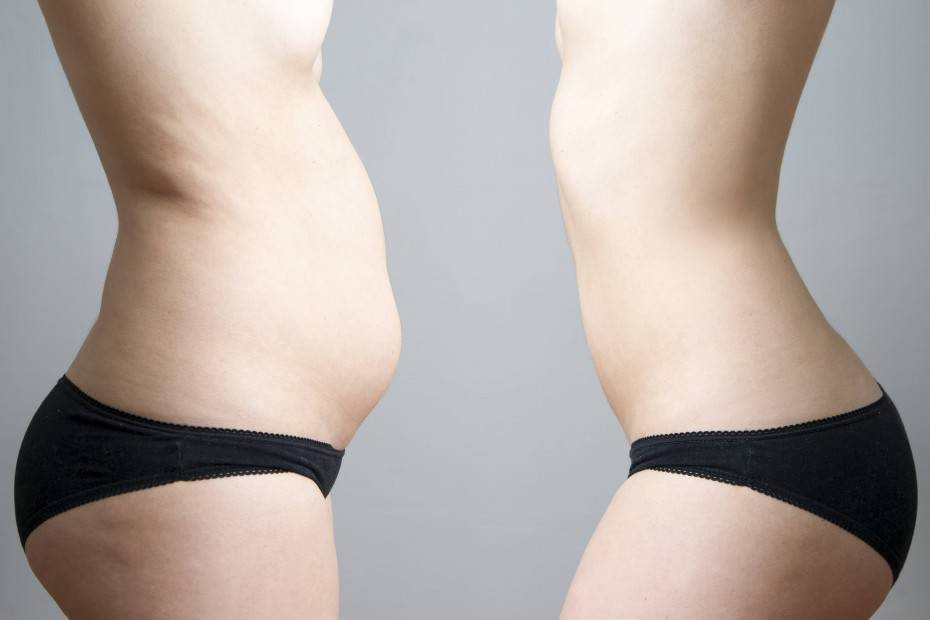
Researcher, Dr. Whitmer from California, says even Dementia is linked to belly size, and not overall weight.
In fact, researchers from the University of California, Los Angeles, examined 40,000 people and concluded that nearly 50% of overweight people, 29% of obese people and 16% of morbidly obese people were not at risk for type 2 diabetes or heart disease.
On the other hand, more than 30% of people in the “normal” weight range were at risk for these diseases.
According to another study, (also performed in California, I'm starting to notice a trend now) Dr. Hirani in 2004 discovered that even if a person had 30 pounds removed with liposuction, they STILL wouldn't see significant health improvements since only subcutaneous fat can be targeted.
But luckily, our bodies are smart. So when we eat healthy, visceral fat is targeted before subcutaneous fat. So your efforts will be rewarded right away!
Though for some people this might be annoying because the "stubborn fat," that people love pinching, sticks around until you get rid of enough visceral fat.
So consistency is key here.
Keep this in mind too. Although tracking visceral fat is useful, it's even more important to track our blood for it's pressure, sugar content, and any mineral deficiencies.
Pro tip: If you still wanted to track your weight without being misled by water weight, then you're better off doing it roughly every four weeks, following the lunar cycle. Just like how the moon controls the tide, it's the same with the water in our bodies. Which is why it's called a "menstral" cycle in homage to the Latin word "mensis" meaning month, which finds its origin in the word moon. On a full moon we carry more water weight than on a new moon, which can be an extra 5 pounds for some people.
Chapter 3: Common mistakes when using LCHF diet (and how to avoid them)
As mentioned in chapter one, there are 6 scenarios that increase insulin to the point that the body stops responding to it. This causes us to gain weight and potentially get ill.
- Eating too frequently(covered in chapter 1)
We have already covered the first two, so now let's jump to the other four.
Eating the wrong fats increases insulin
It's not just the minerals from non-hybrid and wild fruits (i.e. juice) and vegetables (i.e. tea) that doesn't trigger insulin.
Healthy fat doesn't either. That's right, eating healthy fat does not make you fat!
As the name "Low Carb, High Fat Diet" would suggest.
In fact, every cell in our body depends on healthy oils and fats as much as water.
We need fat because each cell is protected inside fat, which we call the cell walls.
Fat also insulates and protects minerals while entering the bloodstream. Otherwise, the hydrochloric acid in our stomach would break them down before reaching our small intestine, where 90% of food is absorbed.
Fat even allows for longer absorption times once in the blood, which means we get more out of what we're eating.
On top of that (pun intended), our brain is even 80% fat and the electrical wiring in our nervous system needs to be insulated with this healthy fat as well.
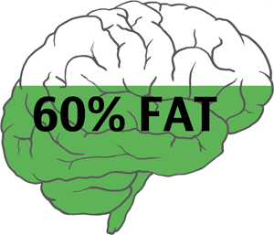
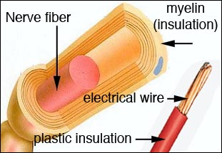
(Fat is critical to say the least)There are two main types of liquids that we consume, which carries minerals.
Water and Oil.
Non-fat and Fat.
If you squeeze a seed that has at least 25% fat, then you will end up with an oil instead of a juice.
If you blend a seed that has at least 25% fat, then you will end up with a butter instead of a smoothie.
It's interesting to note that while most homes have blenders or juicers for fruits and leaves, how many have equipment to process seeds?
Who has a stone mill to produce fresh flour (from non-fatty seeds) or an oil press for fresh oil?
Make no mistake. Oil begins to degrade from exposure to oxygen after it's been pressed the same way juice does.
The same goes for flour overtime.
We don't want to eat stale food.
It's sort of similar to how metal breaks down and rusts, thanks to oxygen. (Side note: That's why we hear so much about "anti-oxidants" being good for us.)
But as long as the seed's shell is in tack, this isn't a concern. The nutrients are protected until you crack it open.
Below are all the (fatty) seeds that produce healthy oils and butters:
Coconut Oil and Butter, Red Palm Oil, Olive Oil, Black Walnut Oil and Butter, Sacha Inchi Butter, Avocado Oil, Cocoa Butter, Pine Nut Oil and Butter, Brazil Nut Oil and Butter, Black Cumin Oil, Black Sesame Oil and Butter (Tahini), Hemp Oil and Butter, Carob Oil and Butter
Pro tip: DO NOT COOK WITH OIL. Professional chefs know the difference between "cooking oil" and "finishing oil." Cooking oil is hydrogenated so it has a higher smoke point. This process produces unhealthy trans-fatty acids, which is what keeps your chocolate from melting in your hand. Even coconut oil can be hydrogenated. We only want to consume cold-pressed, unrefined oils. Meaning they have a low smoke point and aren't good for cooking. So instead use glass cookware to prevent food from sticking, and cover it with a lid to increase the humidity to also prevent sticking. Then put on your oil of choice after you're done cooking to get all the benefits from it.
Everyone may benefit from consuming the oil from these non-hybrid seeds.
The trouble is that when most people think of healthy fat, the next thing we think of is protein. Meaning primarily meat (as if the two were the same).
So now, what's my opinion on meat?
Have you guessed it so far? You might be surprised.
First off, I'm only concerned with the health aspect of this question... not morality.
Let's clear the air. To eat, you have to kill. Unless you photosynthesis your meals or something even more spectacular. Plants are living beings too, just like cattle, fish, goats, etc.
So if it's morally acceptable for me to cut off kale to eat it, then why wouldn't it be for other food? We think plants don't scream nor bleed, but they do.
The "blood" just isn't red (unless it's from the tree, Croton Lechleri - which is the best for healing wounds).
Ever heard of the "mimosa" or "sensitive" plant? If you blow hard against it then it nearly disappears, retracting its leaves.
(This is its defense mechanism, to hide and escape from its predator. - It's also high in zinc and excellent for men's health.)
A venus flytrap also reacts when meat (an insect) comes around.
A carnivorous PLANT!
There's also two kinds of humans, and thus two answers to this debate.
Despite the numerous back and forth on the subject whether we're biologically designed to eat meat, plants or both -- the results are in.
According to scientists we (as in all of us grouped together) are designed to primarily eat plants with occasional meat being fine (although not required for anyone). (There's more to this, of course.)
The amount of meat safely consumed varies for each person and is based on your "metabolic type."
Too much meat (especially the wrong kind) for the wrong person will increase their insulin (even though it's not adding sugar into your blood).
This is the pink elephant that isn't spoken much of (if at all) in Low Carb communities.
Meat can raise insulin levels higher than a large apple, a cup of oatmeal, and a cup and a half of white flour pasta!
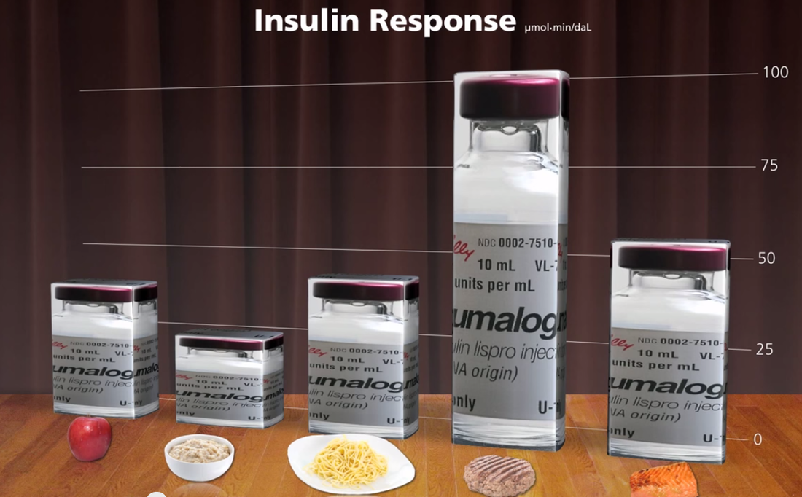
The above graph just compares beef and fish, but chicken and pork aren't any better.
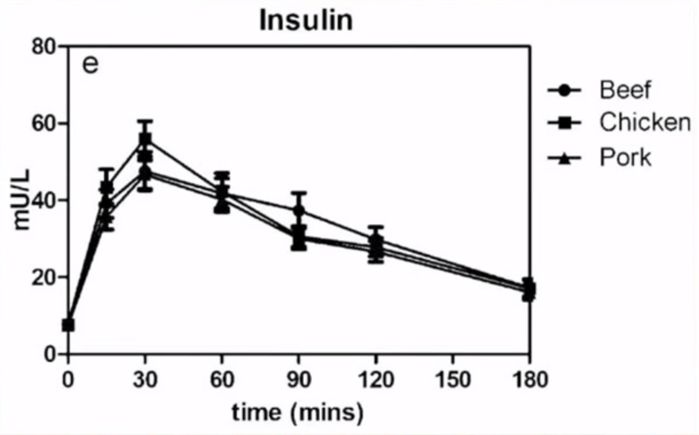
In fact, a meat protein can cause as much insulin release as pure sugar.
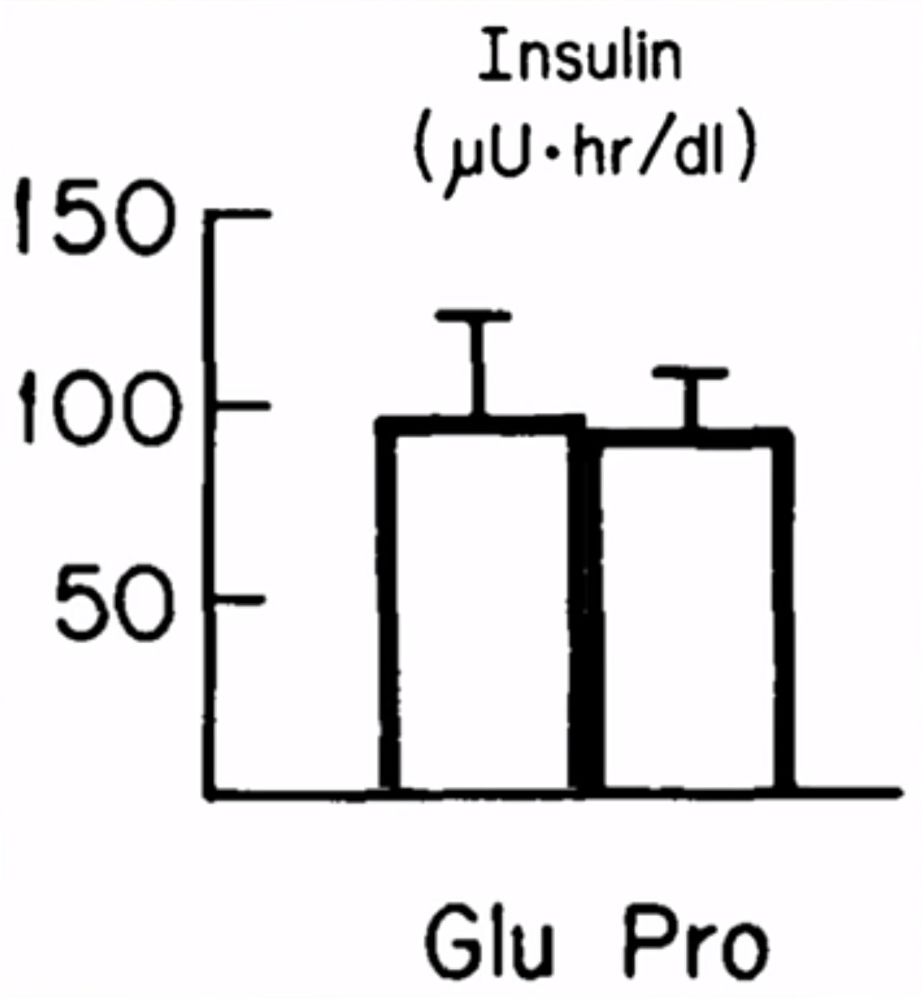
You cannot lose significant weight while your insulin is high.
So test this out. If you're stuck at your weight, stop eating animal products for a bit and see how you feel. Pace yourself if you need to by, but give it a minimum of two weeks to really be able to tell the difference.
Studies have shown that after only 21 days people, regardless of age or gender, placed on a vegetarian diet saw a significant drop in insulin. In fact, healthy vegans (because there are unhealthy ones) can have up to 50% less insulin than a person who eats meat regularly.
For more detailed information about this, you should check out Dr. Michael Greger's video here.
With that being said, it's obvious that some people's bodies are more adjusted to meat than others. You most likely already know if you're a meat-eater or not.
Would you rather eat a SWEET dessert or a nice big JUICY steak?
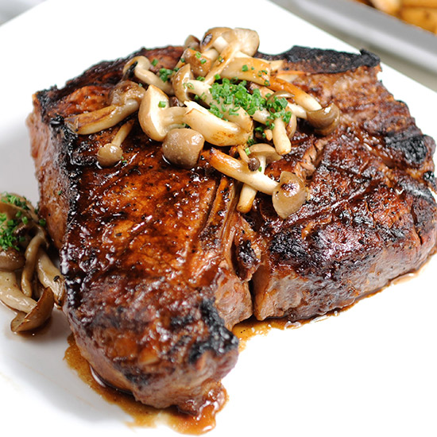
(If you could only choose one to cheat with, which would it be? Sweet or savory?)
Do you often say something is too sweet? Then you're most likely a meat eater.
Many people from colder regions, however, have no choice but to rely on meat.
But it's REAL animals that they eat.
The Eskimo eats walrus, polar bear, wild fish.
The American eats cows, chickens, and pigs.
You would never find these domesticated hybrid animals in the wild. Only behind fences on farms. And, on a farm they're fed mostly GMO corn and/or soy, instead of having access to a range of wild plants.
(Side note: If you want to know how to stay healthy, just look at the plants a wild animal eats to prevent illness. That's how a lot of medicine has been discovered. In fact, where you do think a large ox or gorilla gets its protein from? They're both vegetarians and I wouldn't want to mess with either.)
Most animals raised for food are grown inside giant industrial buildings called factory farms. In 1992, 30% of pigs were kept in a factory farm in the US, and in 2016 it was over 97%.
Not to mention, the labeling of chickens is unregulated. The only term that means anything would be "pasture-raised" as seen below.
Even the difference between farm-raised salmon and wild-caught salmon is HUGE.
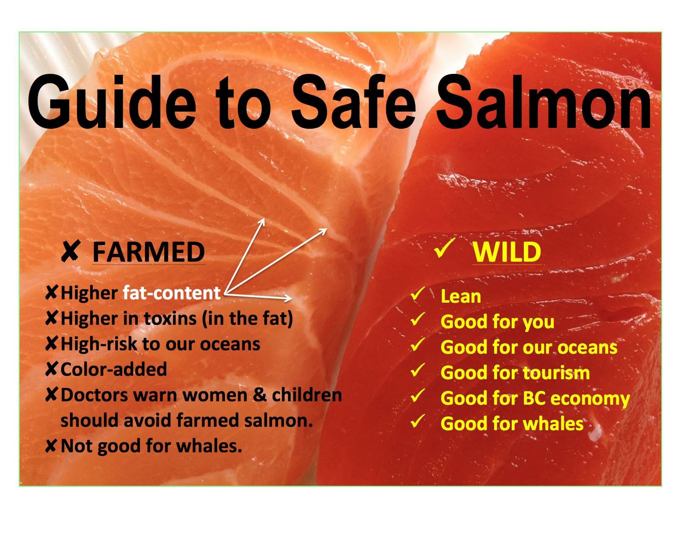
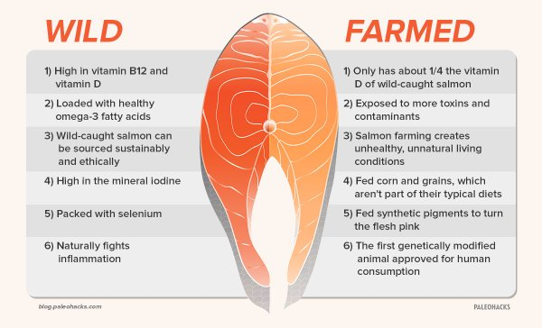
Again, there's a huge difference between farm meat and hunted meat.
Between tortured meat and meat that never suffered a minute in its life, while living in the woods or open sea.
Wild meat is in a completely different category.
The majority of farm-raised animals are hormone injected and tortured throughout their lives. This fact greatly contributes to the spike in insulin we receive when we consume them.
If you torture your food, then you're really torturing yourself in the long run.
Most people don't realize that processed Deli meat is considered a "group 1" carcinogen according to the World Health Organization. Placed in the same group as cigarettes, asbestos, and plutonium. (If you haven't seen it already be sure to check out the Netflix special to learn more, called: "What the Health.")
Mass cattle production is evil. Animals born in hell, raised in hell, killed in hell. For your nice barbecue with your friends, children, and family.
Knowing this, would you rather consume the personality / energy of a farm-raised animal or a wild animal?
- OR -
If you're a "sweet" type (like me), then cutting out meat isn't that big of a deal. Again, it's not required to be healthy, but it is your choice. And if you want something to help you during your transition, or that's similar meat, then there is an American company named Beyond Meat, which is completely vegetarian.
Their concept is revolutionary.
If you're a "savory" type, and still want to occasionally indulge, then focus on non-hybrid animals. For example, bison (buffalo) meat (even though it's red meat) is healthier than chicken. If you know a hunter, then that's even better.
If you decide to go with wild fish, then remember that there's a reason why Asian cultures drink green tea along with their meals. The antioxidant known as "catechin" blocks the absorption of mercury that the fish might have picked up from the ocean.
(Side note: Protein powder and protein bars are not any better.)
Notice how I haven't mentioned dairy products yet?
Milk, butter, cheese, yogurt.
Despite the supposed "health benefits" of dairy that we get bombarded with in commercials, consider this...
When we're babies, we require much more sugar and fat to feed our developing nervous system than when we're older.
A mother only produces milk for the length of time that it's required of their young to drink it. Our bodies are that smart.
Now, when we're older it would be too much for us.
Not to mention the fact that we're the only animal that drinks milk from another animal.
Plus cows are hybrid animals. Our beloved dairy (Holstein) cow is a cross between a buffalo and an ox!
At least goats are natural animals, which is why their milk more closely resembles human breast milk.
But again, dairy causes far more harm than good no matter who you are. The only exception is if you're a baby drinking your mother's breast milk.
What we have just done with this section of the guide is reconcile the great debate between two titans: Dr. Robert Atkins (Low Carb, High Meat) and Dr. John McDougall (No Meat, High Starch).
First we need to know which side of the metabolic spectrum we are on.
Some people are more sensitive to farm meat, while others are more sensitive to hybrid starch.
Then we can seek out the highest quality, non-hybrid, wild versions of that food.
Taking medicine increases insulin
Blood sugar levels will improve before you begin to see the weight come off.
Your body knows that it needs to fix that first.
The trouble is if you're taking medicine, especially if you're a type-2 diabetic, then you need to slowly lower the dosage underneath the supervision of a trusted doctor. (More about diabetes will be discussed in chapter 5.)
Whether you decide to do a liquid fast or just eat cleaner food, you have to be aware that your condition will be improving, so you won't require the same dosage of pharmaceutical drugs.
As it improves, the less drugs, hormones and steroids you will need to take.
Think about what would happen to a healthy person if they took pharmaceuticals for something they didn't have. They would get sick!
Unlike with natural food, proprietary medicine is foreign to the body. If there's nothing for it to fight in your body, then you'll just be experiencing something from the list of side effects, rather than the benefits.
Your body then needs to detox itself from the medicine.
No where in history have we needed to take a pharmaceutical to prevent or cure an illness, to be healthy. Only food can create health.
Pharmaceuticals only exist to treat the symptoms, to make you feel better in the moment, but not to cure the root cause. Which is said so often a shirt could be made.
So again, if you're taking ANY pharmaceutical drug, then it's critical to pay extra attention to your body and consult with your doctor, so they may tell you at what point you can lower your dosage and eventually come off of the drugs.
Lack of stretching (stagnate blood) increases insulin
How clean our blood is depends on our circulation.
The faster our blood is moving means the more times it is filtered through our heart. Which means the cleaner it is.
We fast to clean our arteries, which improves circulation.
Stagnant blood is a killer.
Exercising (preferably fast vs slow cardio), stretching (preferably aerobic vs. static), massages, acupressure / acupuncture and even dry brushing (preferably with cactus bristles), to stimulate the skin in the direction toward the heart, all improves circulation.
At the minimum, it's great to stretch daily. Especially when we sit in our cars, sit at our offices, and sit around in our living rooms for the majority of the day.
A daily yoga and / or Qi Gong routine would make a HUGE difference.
You can easily follow along on YouTube with Adriene for yoga or Marisa for Qi Gong.
Qi Gong focuses on acupressure points and is closely related to Tai Chi, which focuses on postures for martial arts fighting.
Pressing on a body part brings more blood to that area, which then receives more nutrition from the blood (nutritious sugar and minerals). Overtime your nervous system becomes trained to keep more blood than usual in that area if you keep up a regular practice. It's like your muscles, if you don't use them for a while then your body will stop prioritizing them and they'll begin to atrophy.
The one thing that all these practices share in common is a focus on breathing technique.
Watch any video about Wim Hof and you'll see how powerful controlling the breath is for our immune system and body.
Short shallow breaths throughout the day hurts us in the long run.
When we breath deeply enough, so we can feel our stomach rise and fall, we're also able to squeeze or "pump" our abdominal organs. This is similar to how the heart pumps. This helps get the blood flowing to improve absorption and elimination of contents in the blood.
Many breathing exercises also focus on curling the spin to also get the blood flowing throughout our body, as well as get the spinal cord fluid moving.
There are many videos you can find to demonstrate this, like this one here.
If you have trouble moving and sit most of the day, then a machine which compresses the legs would also be beneficial to improve the circulation of blood back towards the heart.
(Side note: Hof also made famous the "cold shower method." It's great for boosting energy, so you can maybe skip that coffee, helps you burn fat as your body is forced to generate heat, and increases your body's tolerance to stress and disease. Give it a try next time you shower by slowly lowering the temperature of the water right before getting out for at least 2 minutes.)
Stress increases insulin
relax
let go
breath in...
1
2
3
I'm not going to say we need to stop stressing or risk illness. We already have our doctors pleasantly reminding us of that.
What I will say is that we shouldn't think stress will magically go away without taking action to help it.
Of course, if it's possible we should reduce our exposure to sources of stress.
Cut out the people in your life that don't make you feel amazing! In the long run, it's better for everyone.
But I know you've heard that advice before. So if that's not possible, then focus on giving yourself some "me" time.
It's too easy to lose our identities when our time is stretched thin by others.
Remember it's not selfish to take care of yourself. It wouldn't be possible for you to help others without you being well first.
Also, remember that time "so-and-so" let you down. Well, it's time to forgive them.
Harboring grudges hurts you more than the other person.
And don't even think about blaming yourself for that "thing" that happened years ago. Forgiving yourself is just as important as forgiving others.
This alone can relieve indigestion, heartburn and a number of other symptoms as odd as it may sound.
The truth is that these negative emotions feed us something worst than carbs.
If we have a negative thought (violent, anxious, etc.), then we certainly have an illness that deserves eating better for.
A negative thought is an aspect of sickness to me. If we experience a negative thought, then we can go higher.
Be wise about what you allow yourself to consume.
I believe stress is more dangerous than cigarettes. If you think about it, you can find some people that live to an old age despite smoking like a chimney every day. Like America's oldest veteran, Richard Overton, who's 111 and smokes 12 cigars daily.
The human will to live seems to matter more than all else. Everyone that lives to an old age has one thing in common, they're all happy and enjoying life!
We have only two modes: parasympathetic (rest and digest) and sympathetic (fight or flight).
When you push yourself non-stop and feel burnt-out, your digestion (ability to break food down with enzymes) slows down, absorption into your cells from your blood slows down, and your elimination of food waste slows down. Everything becomes stagnant.
Our thoughts and emotions directly influence our physical well-being. Some meditation to calm the mind can go a long way and can even double the will-power in some people.
A "short cut" to the calming effects of meditation can be found in consuming vegetables high in Iodine to help your Thyroid gland, which sends various hormones throughout your body. More specifically sea vegetables, such as:
Irish Sea Moss, Bladderwrack, Kelp, Wakame, Dulse, Arame, Hijiki (avoid if contaminated with arsenic), Nori (algae), Ulva (sea lettuce), Kombu, Mekabu (root of Wakame), Mozuku
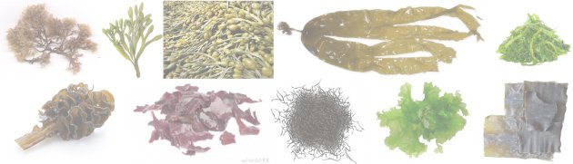
Chapter 4: What to do if you fall off track with the LCHF diet
Society prefers that we "accept" ourselves for who we are right now. But if you're still reading, then you're someone who wants to push past what society has laid out for you.
Society also tells us that it's normal to gain weight as we get older. Just look around. But is this really normal?
We all develop identities as we go through life. These are the stories that we tell ourselves, which can remain the same from the time we're children.
Often they are lies, like "I'm just a big person. It's who I am." or "I'm not heavy. I'm just fine. I'm only slightly overweight."
But who really wants to be "just fine," or worst, have to hear it from a friend?
Wouldn't we rather be exceptional!
We forget that we can change our story whenever we choose. Even if we have "obligations" towards others, there's still always a way if you want it bad enough.
Secretly we know this, because we see other people changing their stories all the time.
But it's never comfortable facing the truth that maybe we've been wrong this entire time. It's less work to stay in the dark.
It's socially acceptable to blame our thyroid or metabolism, and compare how easy we "think" it is for others to lose and maintain their weight.
In reality, very few people will tell you what it takes, because frankly not everyone cares to hear it. They only want to hear the shortcut, to learn the "one" thing they need to do. But you and I both know that's never the case.
We have to be prepared to confront our own psychology, the lies we tell ourselves, in order to change our bodies.
Self-sabotage is a real thing. What you believe is what you will become. If you can't accept changing, then it won't happen because you'll always find ways to prevent it.
While there are occasionally valid medical conditions (exceptions to the rule), there are things that anyone can do to change.
Remember that eating healthy so you can feel good is to show yourself respect! To treat yourself good, is to honor yourself.
What story are you showing the world? What story do you want others to watch?
The two biggest enemies to living this lifestyle are boredom and convenience.
Sometimes we break a diet because we're eating for comfort. We want food to be our escape from loneliness, and provide us with a novel experience.
If we're unhappy, then we look for food with a crunch... like a bag of chips.
We don't even consider that maybe we can find something else to do, that's unrelated to food. Whether it's an event with friends or an interest you pursue on your own, either would be more rewarding than munching.
If you can relate to this, then stop now. Make a list of other activities you would love to do the next time you're bored, upset, frustrated, etc. It's important to plan ahead and know this list rather than trying to find something to do in the moment. (Are you stopping now to write?)
(Side note: spending time with friends doesn't always have to be over food or alcohol.)
An "abundance" mentality is also crucial.
In contrast, a "scarcity" mindset means that you eat whatever free junk food there is on that table in the break room.
Maybe our parents instilled in us at a young age to "never waste food." So we feel the need to always clean our plate even if we're totally stuffed. In practice, this belief serves to hurt us more than help. This is something that I had to overcome, and can now appreciate no longer telling myself that I'm the guy who "can't turn down free food."
I know there is much better food out there, than the crap that's freely available.
Now to help keep you on track, we'll go over some fun, tasty and convenient guidelines to "meal prep" that will save you time while cooking at home. All while highlighting a few special ingredients.
This includes a:
We're going to skip something solid for breakfast since we're following the intermittent fasting model.
For lunch we need something travel-friendly, since we're usually not home during this time.
For dinner we want something that we can look forward to after a LONG tiresome day at work. Something that doesn't require us to stand in front of an oven for an hour before we can eat, or have to give up our weekends just to meal prep.
These are the best meals that I have come up with and eat often.
Keep in mind not to psyche ourselves out by saying things like, "I messed up today, so I guess I might as well continue to cheat and start fresh tomorrow."
Tomorrow might never come, so don't put off what you can do today for tomorrow.
(After this, we'll take a look at some tools I use in the kitchen that save me time.)
Liquid Breakfast
In America, most of us start our day with a cup of coffee (extra processed sugar and cream, please). Without it, don't bother talking to us right?
But this habit of drinking a single cup, five days out of the week, adds up to make us dehydrated and constipated. Add the fact that we're tired in the morning, not because we need caffeine, but because we're dehydrated from fasting during our sleep.
If we instead just drank 16 ounces (two cups) of water within 1 hour of waking up then we would begin to feel the energy coming back to us.
Room temperature water is the easiest on our digestive system since the body won't have to expend any energy to warm it up.
(Side note: This is why Asian cultures don't put handles on their tea cups. Their philosophy is that if it's too hot to hold, then it's too hot to drink.)
Also, it's good to drink water 30 minutes before eating and 30-60 minutes after eating, instead of while you're eating to avoid gas and bloating. A small amount of water during a meal of course shouldn't cause trouble.
But not all water is treated equal!
Most people think drinking bottled water is enough to re-hydrate us. But the truth is there's not enough minerals in most bottled water to replenish us.
The key difference is that we don't want empty water. We want living water!
The wrong kind of water can actually make us more bloated!
Have you ever drank so much water that you could literally hear and feel it bouncing around in your stomach? That means it's not being absorbed.
Water from nature has a certain balance of minerals, which makes it absorbable. However, the majority of bottled water is stripped of these minerals during filtration and only a fraction are placed back. Just enough to make it taste better than tap water.
In reality, most tap water and bottled water comes from very similar sources, if not the same source.
So what makes one water source better than the next?
Location, location, location.
The more populated the area is around the water source, the higher the contamination of it will be. Also, some areas have more diverse mineral compositions than others.
So what can we do?
How can we get the MOST out of something as simple as water so we can start losing inches around our waist, and stop feeling bloated?
As far as water goes, you have a few options. But in my opinion, there's only "better" and "best."
Better: Reverse Osmosis Water
The company, Home Master, is unique because it's the only one that adds Magnesium and Calcium back into the water after filtering it. This way you're not drinking empty water and instead you now have a pH of 7.5 - 8.0. Not to mention, you don't need to waste plastic bottles and instead you can have an unlimited supply right from your kitchen sink. You'll love seeing the face of your friends and family when you give them "sink" water that doesn't taste anything like sink water.
Pro tip: If you want to "remineralize" your own water, all you need to do is add a clean sea salt, like Celtic Sea Salt, and some freshly squeezed key limes.
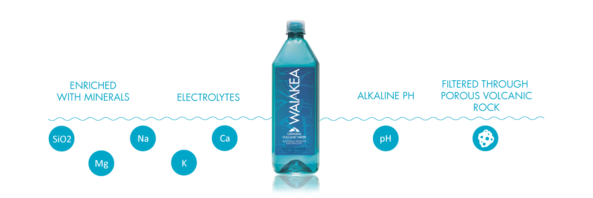
Best: Volcanic Water (thanks to its sulfur content)
What's the best bottled water that I could uncover from my research? Waiakea water, which is ranked as the #2 best bottled water in the world according to 10 Best Water (#1 comes from the Tibetan Mountain Range and is unavailable in America). This is what I've been drinking for years now, and yes you can taste the difference because of the naturally higher mineral content. This has around a 8.8 pH.
The reason I didn't say distilled water is because everything is filtered out. This is the best example of "empty water." Many people report chest pains after drinking distilled water daily for a month or so. This is because this "empty water" acts as a sponge or magnet absorbing any "toxins" (meaning excess minerals, etc. / remember the poison is always in the dose). This is a GREAT detox though... but after a while any "detox" needs to come to an end. I usually recommend two weeks, no matter what the detox method is.
Most "alkaline" water can be just as bad as distilled for some people, regardless of how tempting a 9 pH may sound. This water achieves it's oddly high pH not from minerals, but artificially from electrocuting the water. Yes, that's right. This process is known as electrolysis, which separates negatively charged minerals (ions) in the water (considered alkaline) from positively charged minerals (ions / derived from metals) in the water (considered acidic). This manipulated water does not resemble nature, despite what the advertisers might tell you. Again, some people have reported chest pain after a month or so of daily drinking, but not everyone does. Make sure to always listen to your body.
Aside from this, there's two other ways to get "living water" in our systems.
Instead of relying on mechanical filtration (i.e. UV light exposure, adding chlorine, etc.), which all water must go through one type or another... why not rely on nature's filtration system?
Living water that's been filtered through the skin of a fruit!
Now, I know what you're going to say.
What about the high sugar content in fruits? Aren't these simple sugars (carbs) bad for us?
First off, there's a huge difference between stale fruit juice in the store (that's likely loaded with preservatives and maybe even food coloring) and freshly squeezed fruit juice.
And, there's a huge difference between hybrid fruit and non-hybrid fruit.
Between (mono-cultured) apple juice and tamarind juice. Between orange juice and fresh mandarin juice. And if you don't know what real guanabana juice tastes like (not the sugary drinks you find in stores), then you're missing out in life.
In fact, what do you think would cause more of a spike in insulin?
Eating whole grapes (second only to figs in highest sugar content) or freshly squeezed grape juice (from grapes with seeds ideally)?
Surprisingly, the whole grapes spike insulin more according to this study below.
I know this goes against everything you've ever heard before.
We have to question everything that we thought we knew. So many people parrot what other people say, without giving it any thought. We should always stop and ask ourselves, "Does this make sense?"
The reason this is possible is because the minerals in the grape juice can more easily enter into the bloodstream of a person when it's removed from unnecessary fiber.
The more minerals, means the less insulin needs to be produced. This fruit contains a balanced mineral-to-sugar ratio (alkaline-to-acid) that agrees with our blood's desired ratio.
The minerals from plants grown in healthy soil, in the wild, is the only thing that we're missing in our diets.
Liquid, pre-digested minerals to be precise... the life blood of a plant.
And if we're a "savory" type, who doesn't feel great from fruit juice all the time (even if it's non-hybrid fruit juice), then herbal tea / infusions are the answer.
Below are my top ten picks for fruit juice and herbal tea:
|
Fruits: 1. Honey Dew Melon 2. Globe Grapes (seeded) 3. Young Thai Coconut Water 4. Prickly Pear (Cactus Fruit) 5. Tamarind 6. Papaya 7. Watermelon (seeded) 8. Mandarins 9. Pomelo 10. Cherries |
Vegetables: 1. Sarsaparilla 2. Guaco 3. Dandelion 4. Damiana 5. Chickweed 6. Irish Sea Moss 7. Quassia Bark 8. Blessed Thistle 9. Stinging Nettle 10. Guinea Hen Weed Bush |
Pro tip: If you want to increase the "anti-oxidants" of your fruit juice, you don't necessarily have to buy some exotic berry you've never heard of. You can just pump the air out of it. Special lids may be purchased for mason jars that allow you to pump out the oxygen in the jar and juice, providing an airtight seal. This keeps the contents inside fresher for longer and makes for a noticeable difference in texture right away.
If you're short on time during the week then you can make your own fruit juice mix or herbal tea mix, from any combination of the above ingredients, at the beginning of the week.
This is how you start your morning for success!
Every morning you can fill up a glass bottle to bring with you on your commute to work. If I'm not using a glass mason jar (which has broken on me in the past), then I use this sturdy glass bottle.
So you know, my favorite addition to any drink is key lime.
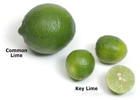
(Instant boost to the pH of your drink - plus citrus fruits help us absorb minerals!)As a quick note, don't try to substitute the real thing freshly squeezed with what you can get in a bottle.
I've tried bottled versions from different companies and it always tasted horrible, while the real thing tastes great!
The same concept goes for my second favorite addition to any drink.
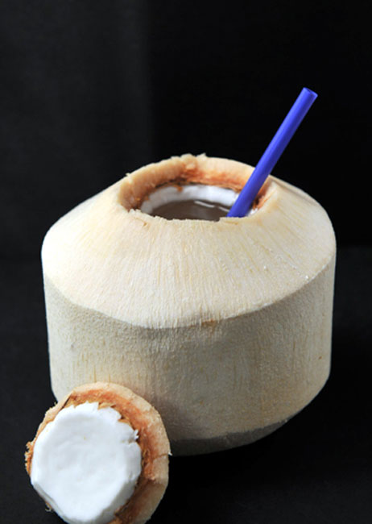
(Coconuts!)Unfortunately, you can't take a shortcut when it comes to coconut water. Drinking from a fresh coconut, right after you've cut it open, makes a huge difference.
If you think about it, a coconut's hard shell is really nature's best water filter. So what's inside is truly the best.
The plus side is when you buy a whole coconut you also get the meat inside, which is full of healthy fat that helps you absorb minerals.
Pro tip: Key limes and coconuts can be combined with any other ingredient to give an INCREDIBLE boost in absorbing nutrients. After stumbling upon this very strange video by John Kohler, I can't help but to wonder what other nutrients could we be missing out on that citrus fruits and coconuts can unlock for us? What's the true potential of this accidental synergistic discovery?
No need to be intimidated. It's very easy to get the water out of the coconut.
If you don't like using a knife, then you just need this tool, which requires very minimum force to use.
If that's still too much for you, then the best source I know of for coconut water can be purchased online here. (The best quality frozen coconut meat also may be purchased from that link.)
And if I still had to recommend a bottled version, I would have to go with this "Taste Nirvana" which is packaged in a glass bottle. It was also rated as the best tasting coconut water according to The Kitchn.
The trouble with many bottled versions of coconut water is that they use an aluminum foil on the interior, which actually leeches into the drink. You can taste the difference.
Most of us already know not to eat or drink out of cans because of the aluminum, but then we'll drink coconut water that's been wrapped in aluminum. It just doesn't make sense.
By now, you might be wondering how come I haven't told you to make a green juice. You know, that kale juice that everyone seems to praise in health circles?
The reason is simple. It doesn't compare at all to the wild herbs I mentioned above. So if you don't like the taste of kale, which I don't, then I'ld skip it.
(Side note: Water Cress is much healthier than kale without the bitter taste, and is my go-to vegetable to cook with.)
Other options for healthy drinks can include seeds like: hemp milk, black sesame seed milk, walnut milk, Brazil nut milk, or pine nut milk..
All you have to do is blend with water any combination of the five above seeds and maybe add a sweetener, like coconut syrup (which is like maple syrup, but from a palm tree).
All that being said, what if you STILL want your morning coffee? I personally don't have anything against coffee. It's the cream and sugar that's the main culprit.
The same goes for chocolate. The cacao bean by itself is healthy, much the same way the coffee bean is healthy. Of course, both aren't actually beans and are instead seeds.
The coffee bean (seed) comes from a fruit that resembles a cherry, but isn't as sweet nor contains as much pulp, so is often discarded.
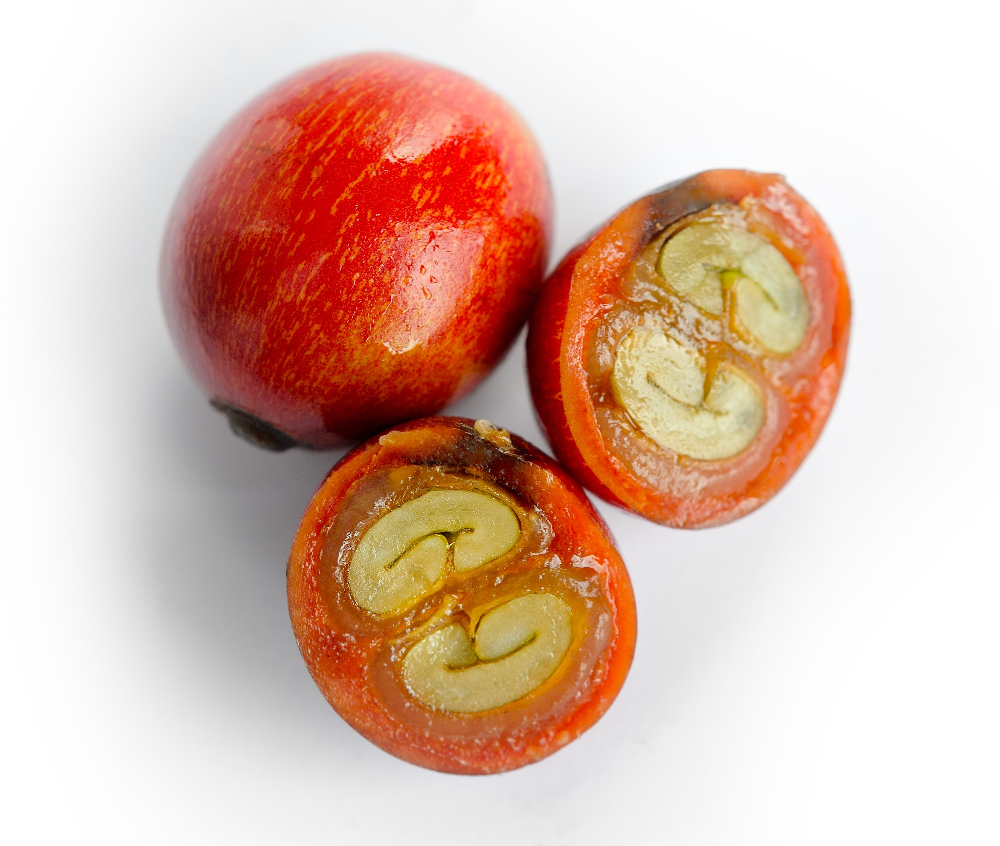
(The fruit is often called the "coffee cherry.")Also, there is a difference between the most common coffee that comes from South America (known as Arabica), which is the most common in America, and coffee that comes from its original habitat in Africa (known as Robusta). This species is the most nutritious for us.
Freshly roasted green coffee beans are also healthier than pre-roasted brown coffee beans that are stale.
Though, I still prefer drinking guaco tea as a pick-me-up (whole guaco chew sticks may also be found in African stores).
Before we end this section, let's not skip everyone's favorite drink. (Although, hopefully you're not having this for breakfast!)
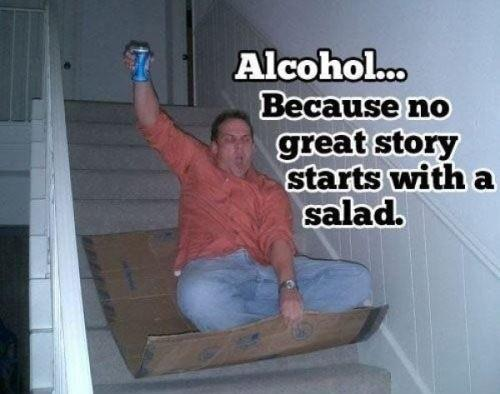
Technically, alcohol should be healthy. You put something into water and allow it to ferment. Any food that is fermented instantly becomes healthier (as long as it doesn't turn a dark color from bad bacteria).
Drinking fermented drinks, like kombucha, does contain a very small amount of alcohol and yet is extremely healthy.
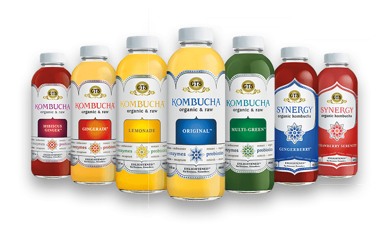
(Making your own would be even better - but any brand is good too)Even something like coconut vinegar (which I prefer over apple cider vinegar), goes through the same fermentation process.
We need this bacteria, which is missing in our diets. (Nutritional yeast sprinkled on food is also an option.)
The reason why most alcohol is bad for us is because they add processed sugar to the recipe to increase the potency of the alcohol and to decrease the amount of time it needs to be brewed.
But there are three alcohols that technically have more "health benefits" than others, despite still being very strong.
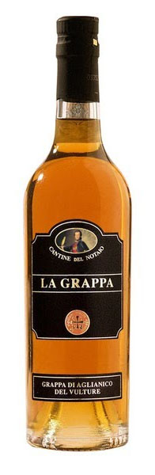
La Grappa (Made by distilling the skins, pulp, seeds, and stems of the grape.)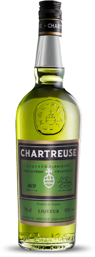
Chartreuse (Made with 130 herbs following a manuscript kept within a French Monastery.)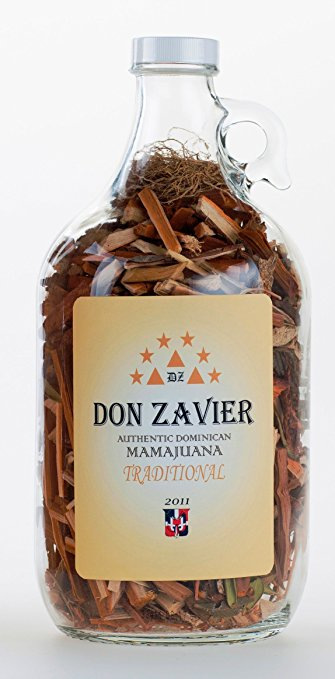
Mamajuana (Dominican rum, red wine, and honey soaks in a bottle with tree bark and herbs - one shot is said to cure headaches in some people.)Grab-and-Go Lunch
Here's the one requirement for lunch: no cooking allowed.
Why?
Because most people don't have the time or a space to cook when they're at work. Maybe they can heat something up, but that's about it.
And I know a lot of people are going to hate me for saying this, but don't use a microwave. Hopefully your office's break room has a small toaster oven there, and if not then it's worth investing in.
So if you're not bringing leftovers from dinner, which can be an amazing lunch, what are some other options that you can have ready?
1. Fresh Fruits (including smoothies)
2. Trail Mix (seeds and dried fruits)
3. Salad
Below are the possible ingredients you may use for each:

(This is the same grocery list as featured in chapter 1 - Print this out and pin it up somewhere if you haven't already so you can remember the food listed.)
Pro tip: I walk to the local farmer's market near my job to grab some of these quick fruits instead of going to get a sandwich or slice of pizza somewhere else. You can also bring a bag of groceries to store in your office's refrigerator so you always have something on hand.
A trail mix might include dry fruit like: golden berries, black currants, mulberries, mission figs, etc.
A smoothie can include fruits from your local grocery store's frozen section or from websites like Northwest Wild Foods and Tamarin Fruits.
The secret to a great smoothie is making it the right thickness. If you only blend frozen berries with water, then you'll end up with a watery disaster. You have to add some insoluble fiber to the mix.
This might be in the form of buying baby bananas and freezing them (after peeling them), frozen coconut meat, or you can add just a little bit of a healthy flour.
You'll be amazing at the difference some flour can do to the texture, without affecting the flavor. This is great if you're someone that is usually still hungry after a smoothie, since now it will feel much more "fulling."
Another tip is to add just a drop of oil into it. This increases the healthy fat content and also how "fulling" it feels. It's very addicting because you're perfecting the sugar-to-fat ratio, which is why chocolate companies and coffee drinkers add cream.
And, if you take away the water from a smoothie, you're left with a smoothie bowl that has an ice-cream texture, which you can add toppings of fresh fruit to.
(Side note: macqui berry (from Chile) has a denser mineral content than the now famous açaí berry that you see giving "smoothie bowls" their name.)
Another option, if you have a sweet-tooth like me, you can make a healthy dessert to bring with you to work without feeling any guilt about it. Just watch the below video to get inspired and think about what else you could make.
If you have a habit of resorting to potato chips because of their crunch, then try chew sticks from an African store or sourced online. To learn more about this rarely discussed ancient tradition, watch herbalist David Cooper's brief talk.
Chew sticks can also be good if you struggle with mindless eating when binging your favorite tv show.
A version of a peanut butter and jelly sandwich could also be healthy if it's made with tahini (made from sesame seeds), an organic fruit jelly (try to find one with low sugar) and 100% rye bread (which can be found at trader joe's - all other "rye bread" seems to still have wheat as the number one ingredient).
Another option is a simple porridge made from a mixture of healthy flour like: einkorn, teff, fonio, royal black quinoa, amaranth, or wild rice. I would mix this with some coconut syrup and reheat at the office. Then you can add on top some fresh fruit (like blueberries) or dry fruit to make the texture more interesting. This is one of my favorites.
Lastly, there's salad. Normally salad isn't my favorite go-to lunch, since I know wild herbs are in a difference class from romaine lettuce. But this can be a fun option if you mix in some fruits and seeds, which can liven up a boring field of greens.
Also, if you make your own salad dressing then it can really be fun. You can treat salad dressing as if you were making a fruit smoothie. Or explore with combining different oils with different vinegars and herbs (refer to the culinary herbs included in the grocery list above) to see what flavors you end up liking. This process should be very personal, since everyone can find a new flavor they never knew existed and fall in love with.
Extravagant Dinner
You don't need recipes. If you did then cookbooks wouldn't collect dust in my house and probably your house too.
When we see these unrealistic meals in most cookbooks we often lose hope. How many times have you followed a recipe to never use it a second time?
This "food porn" looks great, but we are not about to block out our entire weekend just for this. Maybe once in a while we'll spend the extra time to prepare something special for others or even treat ourselves, but this is not going to be anyone's daily ritual.
In other words, this is not going to be what gets you to lose weight and keep it off.
Instead we need a basic formula to help us build a meal.
Let's call it the "Four Pot Formula."
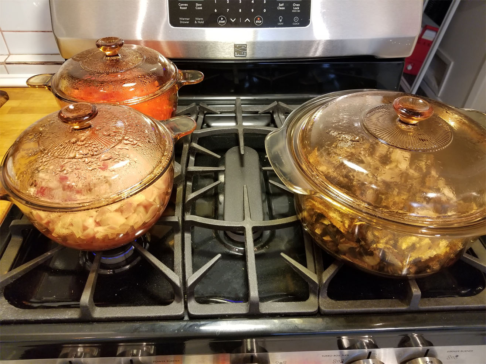
(My kitchen during a meal prep. Remember that because we're looking to get the minerals from food more than vitamins, etc., it's not bad to cook food. The minerals aren't vulnerable to heat and instead are indestructible. If you think about it, herbal tea has been used medicinally for centuries even though it's placed in boiling water.)You can use this method to create your own recipes.
Most meals will include red onions, red peppers, portobello mushrooms, and greens. Greens may include: kale, brussel sprouts, swiss chard, chicory, dandelion.
The concept is to not put away any food into the refrigerator until it's "ready to eat." That means cutting and cooking it before storing. Re-heating something takes less time than to initially heat it.
If you do this as soon as you come home from the grocery store, then it's easy to develop into a habit. This method should also help you reduce wasting food over time.
Imagine coming home after work to a fridge full of food that you just have to pull out and heat up. It's the convenience of a microwavable frozen dinner, but 100 times healthier.
Also, plan ahead if your not going to prepare meals for all 5 days during the week. Think about which days you're going to buy lunch or dinner at a restaurant, so you can plan your groceries accordingly.
Pro tip: Write out your grocery list in the order of the aisles, so your not walking back and forth in the store or forgetting stuff on your list. You can also tape a piece of paper to your fridge and write down stuff as you run out of it. Or if you have an Alexa device, then you can tell it to remember the items and even email them to you. It should go without saying to always check your fridge and pantry before you leave so any leftover food from the week before can be planned for.
Some meals might include an ancient grain pasta, wild rice / quinoa component, purple potato or squash which may also be prepared in advance so it only needs to be reheated during the week.
Once you have the base of the meal down, it's time to add the flavor.
Pro tip: Heat spices to wake them up! This is how you get the most flavor out. A spice is any dried culinary herb that is not a leaf. Heating leaves won't add flavor to them. Also, not all are actually spicy. This includes: Annatto, Sumac, Cardamon, Cloves, Allspice, and Star Anise. This trick also works with some berries, like Elderberry. You can bring out a completely different and enhanced flavor.
Learning how to cook is all about learning how to add flavor. This is when you should take the time to investigate your favorite sauces and seasoning blends to find out what's inside. Then just make your own using the best ingredients without any preservatives!
Eating does not need to be boring food.
A great resource to watch if you're just starting out to cook can be the Brothers Green. Even though they don't always use the healthiest ingredients, the fact that they're making it themselves instead of buying pre-made food from a store makes it a much better option. Also, all ingredients can be substituted out for healthier ones with some creativity.
For example, instead of sugar I use coconut syrup (since it's already in liquid form it's easier to absorb into the blood than sugar granules) and instead of salt (even though I still use Celtic Sea Salt) there's mixed sea vegetable flakes and kelp flakes.
Instead of "hot sauce," I love adding Tepin pepper to my meals.
And if you're going to use Cinnamon, make sure it's real cinnamon. It's known as Ceylon, which is native to India, Sri Lanka, Bangladesh, and Myanmar. The trouble is much of the cinnamon sold in the United States is Cassia cinnamon, also known as False Chinese Cinnamon, which is more bitter and causes heart pain after constant use in some people. Coumarin, which is moderately toxic to the liver and kidneys, is high in false cinnamon and low in real cinnamon.
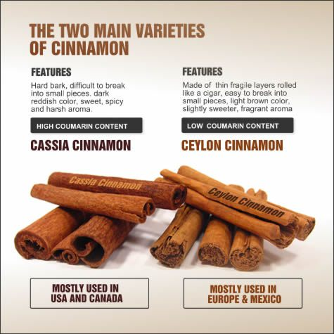
The last thing to think about when preparing any food is that the first taste is with the eye. If you're someone that really loves their food looking it's best and were to press me for a cook book despite what I said about, then I would have to recommend "Love on a Plate" by Marcus and Cara.
Time Saving Tools in the Kitchen
Always use the right tool for the right job.
When I'm in the kitchen I don't want to waste any time looking for what I need, so being organized pays off.
There's a concept called the "first-in-sight method" that has you place the tools (or ingredients) you use the most in visible places.
Out of sight, out of mind.
You don't want to dig behind other tools to get something that you know is important. Or worst forget about it. I kept this concept in mind while organizing my kitchen. (This is also why I recommend printing out the grocery and herb list I featured above. If you don't look at it often, then you'll forget about it.)
So now, what tools do I use?
For one, DO NOT USE stainless steel when possible. It leeches into your food, especially non-stick pans. All the best chefs will use a wooden spoon to avoid metal on metal contact, which scratches.
Aside from wood, there's glass, ceramic and silicon, which are the best materials.
There's Glass Cookware, Glass Tea Kettles, Glass Tea Pots, GlassLock (for storage containers), Glass Bottles, (or these Glass Bottles better for longer storage) and Mason Jars.
There's Silicon Spatulas, Silicon Tongs, and Silicone Basting Brushes.
You also want to use a wood cutting board (with wood oil to lessen scratches), a sharp stainless steel knife (8 inches and 4 inches), that you never wash in the dish washer and store on a magnetic strip or on a knife block to avoid becoming dull when stored in a drawer. A sharpening tool would also come in handy for monthly maintenance. And a Williams Sonoma Multi-Chopper saves a lot of time as well.
Appliances might include a high speed blender, cold press juicer, grain mill, oil press, dehydrator.
Pro tip: Play music while you cook and clean. Invest in an Alexa device, so you can switch songs without having to touch anything.
Chapter 5: 3 Health issues that you can fix with the LCHF diet
If disease is heritary, then the food we eat must be heritary as well. If we stop the heritary food, you will stop the hertiary disease. Maybe that sounds too bold, or maybe it's not bold enough.
All I know is that there's a deficiency behind every "dis-ease," when the body is not at ease.
We're malnourished. We're stuffed, but our bodies are starving.
And there are some powerful tropical plants that most people have never heard of.
If we travel outside of America and the western world, we see that traditional healers from the rest of the world use plant medicine to provide health care to 80% of the human population, over 4 billion people!
Also, over 25% of prescribed drugs contain plant materials as their principal active ingredient.
According to a study by the congressional group, the U.S. imported over 24 million dollars in 1974 of medicinal plants and turned these into more than 3 billion dollars worth of medicines.
When you consider the fact that 25% of medicine is derived from about 90 species of plants, and that there are over 391,000 known species in the world, then you can see that we have a lot more to explore.
Whatever condition you may have is not caused from lacking a pharmaceutical drug. No one consumes these drugs to build up a strong immune system to prevent us from falling ill. So they do not heal. Only mask symptoms if we really think about it.
Traditional healers from across time have used different herbal preparations known as tinctures or spagyerics.
This is the food you should eat, so your body can thrive. We were just never taught these things, because there isn't as much profit in knowing this.
Just like how we have our favorite foods, so do plants.. a certain mineral is usually highest in each plant.
And each system in the body needs a predominant mineral to thrive.
When you feed the plants that are the highest in a certain mineral that your body is deficient in to fix a problem, then it's like a match made in heaven. It's amazing that nature has created things to be like this for us.

Below is listed the single herb highest in each mineral:
Iron = Guaco
Copper = Kalawalla
Silica = Irish Sea Moss (best multi-mineral)
Zinc (for men) = Capadula
Zinc (for women) = Damiana
Green (chlorophyll) = Anamu
Iodine = Mecabu
Cleanse = Qussia
Diabetic / Heart Disease
When it comes to treating type 2 diabetes, we've got it so wrong.
To recap, insulin is a hormone. A hormone is a single message from one part of the body to another part.
Insulin is produced when the pancreas measures high amounts of sugar in the blood and needs to communicate to the body's cells: “Hey! Too much sugar in the blood! Use as fuel!”
Now the body's cells can absorbs sugar, whereas before they couldn’t. If the body's cells become full, then the extra sugar gets stored in the liver to be later released when the blood's sugar becomes too low. If the liver becomes full, then sugar is converted to fat by a process known as lipogenesis.
The more blood sugar, the more insulin.
Type 1 diabetes means the pancreas doesn’t produce the message of insulin, so an insulin shot is administered.
Type 2 diabetes means the body's cells have stopped responding to insulin’s message. It stopped because there's no where to put the sugar, except to store it away as fat. Even if you're not "fat," the body's cells and liver can still be filled with sugar and not able to absorb anymore until the sugar has been depleted. So excess sugar causes excess insulin, which then gets ignored. This is known as being insulin-resistant.
So the solution is an insulin shot! Do you see the problem here?
We're trying to solve two different problems with the same method.
While this works initially, the same problem will arise again when the body's cells become resistant again. It's like fighting fire with fire. I don't know about you, but I would rather be using water to fight fire.
If you carefully reduce the insulin, the body will slowly start to listen to it again.
But how do you reduce the insulin?
Do we need some magical shot?
No! We just need to reduce the sugar in the blood. By slowly reducing sugar intake, we begin to remove stored sugar (fat) so our body's cells aren't full anymore and can again respond to insulin's message of using the new sugar as fuel.
The more our bodies are receptive to natural insulin that the body produces means the less synthetic insulin we need from a shot. Dr. Eric Westman recommends for most people to reduce their insulin shots by 50% the first day you remove sugars from your diet to prevent your blood sugar from falling to dangerously low levels. Then you can slowly continue to reduce the shots until you're no longer taking them. This method reduces shock, opposed to quitting the shots cold turkey. Of course, check with your doctor who can monitor your blood during this process. Patience is needed, as well as close supervision to play it safe.
(Side note: Ever heard of Leptin? Leptin is a hormone message from fat cells to the brain (hypothalamus gland) that says you're fill. Drug companies saw this hormone as a way to capitalize. They produced Leptin in a pill with hopes of getting people to reduce their appetite. But the brain is smart. Sending a false message to the brain, so it thinks the body is full, didn't work as they planned. The problem is there’s already plenty of leptin "messages" in the body. The brain has just become resistant to it overtime, due to us not listening to our bodies and overeating. The brain learns through our patterns to ignore leptin. This kind of failure is reminiscent of the current treatment for type 2 diabetes.)
Heart disease typically results from clogged arteries due to sugar that forms into fat in the blood, which gets stuck and forms into hard plague. This "traffic jam" in the arteries causes inflammation in the body.
In reality, type 2 diabetes and heart disease share a similar root cause. Excess sugar in the blood. Different people will just react uniquely.
The way to fix an issue involving the blood is two-fold:
Step #1 Clean the blood
Step #2 Feed the blood
We talked about how to improve circulation with stretching, etc.
But I held back one crucial thing for those who stuck around reading.
You need iron because it attracts oxygen into the blood. This feeds the blood and will help you clean out your arteries.
There are a few herbs that are very high in iron, but my favorite is Guaco. (Which coincidentally happens to be my favorite tasting tea).
The other powerful herbs that are good for diabetes / heart disease (and really any issue affected by the blood, including sickle cell, etc.) include:
Sarsaparilla, Yellow Dock, Burdock, Elder (berry and flower), Bugleweed, Centaury, Valerian, Lily of the Valley, Salsify, Pelican Flower.
Pro tip: If you are addicted to sweets and want to completely remove your dependency on anything high in sugar, then there's a secret sweeter that you need to know about. It's a secret because during the early 1970's Aspartame was approved by the FDA, while mysteriously "Miracle Berries" were denied. Miracle Berries are grown in Africa and are completely natural. The reason it has received such a name is because within seconds of consuming you will notice that sour food (such as citrus fruit) tastes sweet! Biting into a lemon will taste like the sweetest lemonade you ever had in your life! I know, because I have Miracle Berries in my house that were grown in Florida. You can also check out the numerous "taste tests" featured on YouTube to see if this claim can hold its weight. Also, if you combine a citrus fruit with something bitter, then that bitterness will be lessened. This is seriously the best kept secret from all diabetics and anyone looking to cut back on sugar!
In recent times, Alzheimer’s Disease is being considered as type 3 diabetes. This is because the brain becomes resistant to receiving the message of insulin, to absorb sugar as fuel, due to it being bombarded with insulin.
Also, the wrong sugar fed to the brain (anything except glucose from non-hybrid fruits and starches) can cause harm over time.
10% of people 65, 25% of people 75, and 50% of people 85 will develop dementia or Alzheimer’s disease according to the Alzheimer’s Association. Researchers predict Alzheimer’s will affect 106 million people by 2050.
Better focus comes from a deflammed mind, which is the result of proper blood flow, unclogged blood vessels, unhindered electrical signals through nerves.
After a proper detox to reduce any inflammation, the best mineral to feed the brain (neocortex to be specific), is copper. The single herb that stands out from the rest is without a doubt Kalawalla, a fern native to the Honduran rainforest. I say that because I've taken all of these herbs for years now, and this one most noticeably increases my focus as well as the focus in others I give this too.
The other herbs high in copper include:
Blue Vervain, Gotu Kola, Suma (root), Wood Betony, Levant Nut, Marula (often found as an oil for skin and hair), Dream Herb
Cancer
Is it just me, or does it seem like the more money we put into cancer, the more cancer we get back.
Clearly there's a problem here. In 1940 it was 1 in 20 people that were diagnosed with cancer, and now it's 1 in 2 people!
That's a huge difference.
The amount of people dying from cancer could fill about 10 commercial jets every day.
But we know what has changed from 100 years ago. It's our food.
Considering that the average cost for chemotherapy is around $30,000, and it's success rate is less than 1/2, investing in some herbs doesn't look so bad.
In fact, just fasting seems to show some serious promise. It's a shame this isn't discussed more, but here are four studies that prove Intermittent Fasting (and periodic fasting) can help your body fight cancer, protect you from the harmful side effects of chemotherapy and prevent it down the road.
The first study we'll look at was published in the Journal: "Science Translational Medicine:"
"Short-term starvation or fasting (48 hours) protects normal cells, mice, and potentially humans from the harmful side effects of a variety of chemotherapy drugs."
"Cycles of starvation were as effective as chemotherapeutic agents in delaying progression of different tumors and increased the effectiveness of these drugs against melanoma, glioma, and breast cancer cells."
"These studies suggest that multiple cycles of fasting promote differential stress sensitization in a wide range of tumors and could potentially replace or augment the efficacy of certain chemotherapy drugs in the treatment of various cancers."
The next study was published in the Journal: "Cell Metabolism:"
Fasting was found to reduce cancer and improve the immune system, along with literally every other function of the body and mind.
The Journal: "Teratogenesis Carcinogensis and Mutagenesis:"
"These results indicate that long-term IF (Intermittent Fasting) regimen exerts an anti-promoting effect on rat hepatocarcinogenesis (pre-cancerous liver cells) induced by DEN (a shot that causes liver cancer)."
And finally here's a study published in the Journal: "Mechanisms of Ageing and Development:"
Two groups of mice were injected with cancerous cells. Both groups didn't change what they ate, just when they ate. The ones following IF didn't contract cancer, whereas the other group had 33% get lymphoma cancer after 4 months.
In case these studies don't inspire you, check out this article I wrote years ago. Be sure to specifically look at the comment section, where a lot of people to my surprise provided their personal testimonial of having their cancer cured thanks to a natural means, as explained in the article.
If you enjoy documentaries, then you have to watch "Eating you Alive" and "The Gerson Therapy."
Again, remember:
Step #1 Clean the body
Step #2 Feed the body
Now in order to feed the body, we want to improve the digestive system with wild leafy greens (chlorophyll) and wild weeds that grow on the land.
If you think about it, weeds can grow anywhere and are very hard to kill. These are the qualities we want for ourselves, that we can get by eating various weeds. It's a shame so much money is spent on herbicides to kill weeds when they are so healthy for us.
The most powerful one is Guinea Hen Weed Bush (Anamu). It's said to be more potent than the famous Soursop for fighting cancer.
Other powerful greens / weeds include:
Linden, Stinging Nettle, Olive, Nopal, Hoodia, Wereke, Lamb's Quarters, Shepherd's Purse, Shepherd's Needle, Soursop, Purslane, Cannabis (if it's legal in your state), Shining Bush.
(Side note: According to Dr. Russell Blaylock, mammograms increase beast cancer by 33.3% if performed every year, for 10 years. This statistic is alarming since many women check between ages 40 and 50. If you did have a tumor then the mammogram could damage it and cause it to metastasize sooner than it normally would have. For a less damaging approach, he instead recommends Infrared thermography (IRT), then an Ultrasound, and finally an MRI.)
Arthritis
Arthritis can cause extreme pain in the joints. This is due to the joints becoming inflamed.
So again, it's a two step process to begin healing:
Step #1 Clean the joints
Step #2 Feed the joints
A strong herbal detox, combined with some Intermittent Fasting (or periodic fasting) will help the inflammation go down.
If you want something even more simple, try walk barefoot on grass to ground the electricity in your body to reduce the pain. The electrical pain signals will be discharged into the earth instead of into your mind, like how a house grounds itself. Watch the documentary "Grounded" to learn more.
Also, healing herbs (such as a balm or a poultice - with preferably Yerba Mansa, the "Calming Herb") may be applied directly onto the skin where you feel the most pain.
As for the mineral you need the most, it's silica. The best source of this mineral can be found in:
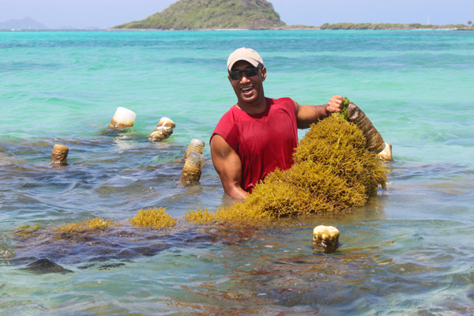
Irish Sea Moss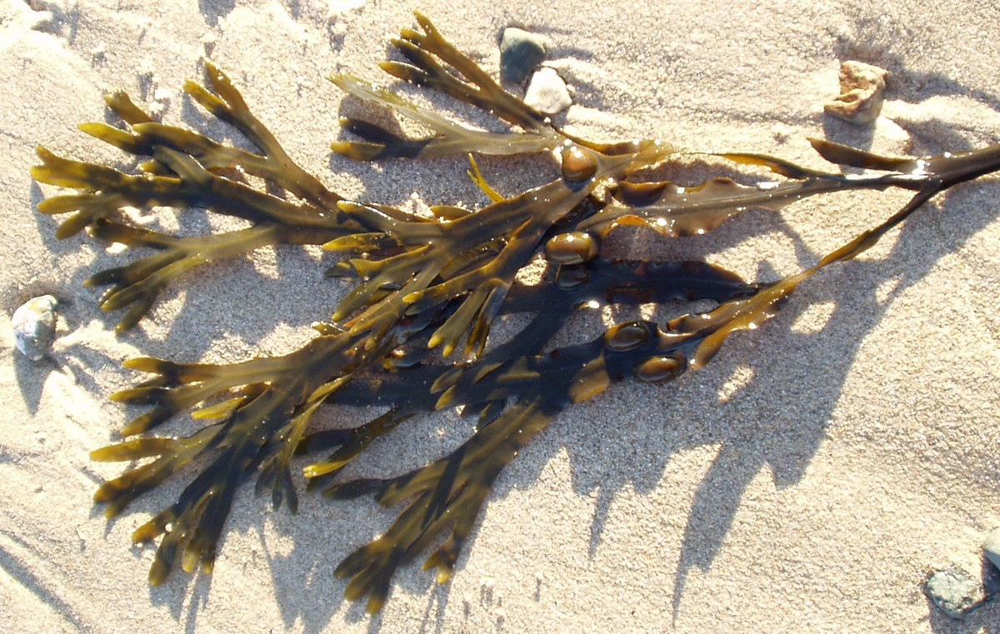
BladderwrackChapter 6: Frequently asked questions about the LCHF diet
a. "How 'low-carb' should I go?"
b. "Are there any downsides to missing out on 'good carbs'?"
c. "How do I explain the diet to my friends, family and doctor?"
d. "How can I eat out at restaurants and still stick with my diet?"
"How 'Low Carb' should I go?"
This depends... how "low-mineral" will you go?
Remember, the whole point is to maintain an alkaline blood level between 7.35 and 7.45. To balance acidity (sugar) with alkalinity (minerals).
If you currently have too much sugar in your blood (and insulin), then a temporary / periodic fast from sugar (carbs) can provide your body with the time it needs to remove stored sugar (fat), and thus raise your blood's pH.
Also, eating mineral-dense vegetables (wild-crafted, non-hybrid herbs) will raise your blood's pH and keep you from getting hungry during a fast. Not to mention, improve your immune system, give you energy, and provide you with mental clarity and calmness.
When we eat non-hybrid plants, grown in healthy soil, we don't have to worry about counting macros or calories. No matter what part of the plant it is, be it the seed (non-oily seeds = starch = complex sugar), roots, stems, leaves, bark, or fruit (simple sugar). Eating the whole plant provides us with the proper ratio of sugar-to-minerals we need.
Just listen to your body. It will tell you when you need to fast, when you need to eat fruit or starch (non-oily seeds), and when you need to eat herbs. You'll know how much you need and what makes you feel your best.
In the beginning you'll be training your body. You might need to reset your taste buds with a fast and try new food, so your body can discover better sources of nutrition. We crave food when our body is deficient in a specific nutrient. So overtime our body will crave a new food if it's a better source for that nutrient. This is the fun part, when you get to explore and try new food with all types of flavors.
Also, it should be said that there are people that can eat mostly fruit (fruitarians) and still be healthy. It just depends on the type of fruit you're eating (living in the tropics helps) and your metabolic type. Take for example Mads and Mikkel, two brothers from Norway that travel the world eating only fruit.
In general, I still recommend eating all parts of a plant.
"Are there any downsides to missing out on 'Good Carbs'?"
Both sugar and minerals are nutrients for our body. Low sugar in our blood is just as bad as low minerals in our blood. Either will cause us to get sick.
So yes, there is a downside.
Just remember that there is a difference between high quality sugar and low quality sugar. Between glucose from non-hybrid fruit (simple sugars) and non-hybrid, non-oily seeds (complex sugars / starch) vs. fructose, sucrose, lactose, dextrose, maltose (the list goes on).
(For a list of the best "good carbs," refer to the grocery list I've featured in this guide.)
It just makes no sense that we were only meant to eat certain parts of a plant, but not the final product (the fruit) after all of the plant's energy went into producing it. Or that we should avoid the seed if it's not oily, but oily seeds are okay.
Now, at the same time we're not prisoners of our health (provided we haven't done major damage to our body). We are in charge, and we still have to live our lives in society.
All of us are going to "cheat" at some points. It's only natural.
But when (not if) you do cheat, be sure you can afford it and it's not often. Also, make sure it's worth it. Don't cheat with some cheap junk food, just because it's convenient. No one wants to eat "crap cakes." No one plans for that, so plan ahead and don't feel guilty afterward.
Of course, there are two different types of people. Some of us will do great planning for cheat meals and others need to be 100% strict. A little cheat meal might turn into a week of cheat meals with the wrong person. Most likely you already know the type of person you are and can plan accordingly.
(Site note: Don't fall victim of cleaver advertising junk. Never get fooled into ordering fake health food. Always read the ingredients. The less ingredients the better. And it's a fat trap to assume "gluten free" means healthy. It does not! That's just marketese. To be very honest, I've noticed in the past that the bread from Subway makes me feel worst than eating a donut from Dunkin Donuts. Imagine that. Always ask questions.)
"How do I explain the diet to my friends, family and doctor?"
What would I say?
Nothing, unless they ask.
If they do ask then I would link them to this guide. That might be all I have to do, unless the other person has specific questions after reading.
If that person doesn't want to read, then I would go on to explain how we need to have alkaline blood, ranging between 7.35 and 7.45.
The only way to get that is by having the right balance between (acidic) sugar and (alkaline) minerals.
Too much sugar turns to fat.
And right now, we're low in minerals because our food is grown in poor soil and we don't eat real vegetables.
Only wild-crafted food has rich soil (or if we grow it ourselves). This is more valuable than the "organic" label.
And if it has seeds, then it's a fruit. So it's likely that the only vegetables we eat are in a Cesar salad. Romaine lettuce and spinach, which go bad quickly, aren't going to save us. Real vegetables are non-hybrid herbs, which we were never taught about.
We want strong food that's been around for thousands of years and not created by man within the last couple of hundred years.
Eating all the parts of a plant gives us the perfect ratio of sugar-to-minerals.
But because we're so low in minerals, it would make sense that we need to be low in sugar (carbs) as well.
Or the opposite can be true. If we're high in minerals, then we can be high in sugar.
Of course, keeping in mind that not all sugar is created equal. There's good sugar (carbs) and bad sugar (carbs) that we learned about in this guide.
Temporarily and periodically fasting will allow the body to remove excess sugar. During that time it's encouraged to eat mineral-dense herbs and drink mineral-rich water. You'll be feeding your body more during this time than you ever did with take out or even at the grocery store.
This little speech should work for your friends, family, and doctor. For some people they will just need to see the results first though, so be patient.
When it comes to your doctor, it's ok to remind him or her that if they're worry about something they can always check your blood.
After all, doctors are taught the minimum about nutrition in school. The focus in school is to know which pharmaceutical drug to prescribe for which problem.
Funny that drug companies are often generously donating to the schools that train doctors. Sometimes they're directly "donating" generously to the professors, as was the case at Harvard Medical School which triggered students to protest. My favorite quote from the linked article is what Dr. Angell said, “If a school like Harvard can’t behave itself, who can?”
So this will most likely be the first time they hear about this way of eating. Meaning, you probably have to be the one to break the news to them. They will be skeptical the same way everyone is upon learning something new or contradictory, but after looking at blood results nothing more needs to be said.
Now, if you notice positive results and really want to recommend it to someone else, again just be patient. Unless they notice you doing better and ask what's your secret, they might not be ready.
If you can't wait for them to ask you, then you can keep it simple and tell them how happy you are that because you've done "xyz" you now experience "abc."
Sharing that your happy with some advice that worked for you is not cumbersome to listen to. Just don't go into any details, unless the other person asks. You don't want to waste their time or yours after all. Wait until they are ready.
Special recap... here are the cheat notes from this guide, to help you implement faster.
"How can you make your Low Carb diet better?"
1. Protein - ditch it for plants or source wild animals
2. Dairy - stay away
3. Starch - ditch the modern, hybrid starch and source the non-hybrid starch
4. Fruit - don't fear it like candy, but ditch the hybrid fruit for the non-hybrid fruit
5. Fat - ditch hydrogenated "cooking" oil and source unprocessed "finishing" oil
6. Eating Schedule - allow more time in between meals, periodic fasting too
7. Vegetables - become verse in all non-hybrid medicinal plants available to us
"How can I eat out at restaurants and still stick with my diet?"
In truth, you can't. But, you can come close enough.
And if you want even more support... watch this special presentation I put together for you that shares the best wild herbs to help you satisfy cravings the right way and burn fat instead of lose water weight! Just click the button below:
And lastly, if any part of this guide has benefited you then please help me by sharing this with everyone that you think may also benefit by using the buttons below.
It's taken me a year to write this and many more years of research distilled into this. The act of you sharing will be very greatly appreciated!
I wish you the best health going forward and can't wait to hear from you if this helps you along your journey!
Take care!
David Alsieux